clinic-vitals-validator-review FAIL 0
apps vscode + libreoffice_calc
The vitals export from our clinic keeps failing the intake check. Open the validation script in my scripts folder and, for every patient row in the exported vitals spreadsheet that the script's rules would reject, add a comment line above the matching rule in the script naming the patient and the value that breaks it. Then write your overall verdict as a comment block at the top of the script.
task config + evaluator
{
"config": [
{
"type": "execute",
"parameters": {
"command": "mkdir -p '/home/user/clinic/exports' '/home/user/clinic/scripts' && : > '/tmp/__fixture.b64' && printf %s 'UEsDBBQACAgIAOqJHl0AAAAAAAAAAAAAAAALAAAAX3JlbHMvLnJlbHOtks9qwzAMh+99CqN747SFMUacXsqgtzK6B9BsJTGJ/2BrW/b2M2OwdZSwwY6Wf/r0IdTsZzeJF0rZBq9gU9UgyOtgrO8VPJ7v17ewb1fNA03IJZIHG7MoPT4rGJjjnZRZD+QwVyGSLz9dSA65PFMvI+oRe5Lbur6R6TsD2gumOBoF6Wg2IM5vkX7DDl1nNR2Cfnbk+cqIH4lCxtQTK5gn+RrS+BTCWBUoyOsu27+6mAUXR4wGGaUOidYxFUhiS/nLqnSfSjl/JJa8dv+5I5qZvCGzrIQxfhqtGnlxC+07UEsHCGu/dgTfAAAAQgIAAFBLAwQUAAgICADqiR5dAAAAAAAAAAAAAAAADwAAAHhsL3dvcmtib29rLnhtbI1TyW7bMBC99ysE3m0tTlTHsBy4coQE6BLEaXIsKGlksaZIgRxvLfrvHVFWkqI99CCJs/DNezOj+fWxkd4ejBVaJSwcB8wDVehSqE3Cvj5moynzLHJVcqkVJOwEll0v3s0P2mxzrbce3Vc2YTViO/N9W9TQcDvWLSiKVNo0HMk0G9+2BnhpawBspB8FQew3XCjWI8zM/2DoqhIFrHSxa0BhD2JAciT2thatZYt5JSQ89YI83rafeUO0Uy4L5i9eaN8bL+fFdtdmlJ2wiksLJLTWhy/5dyiQFHEpmVdyhFQ3LVXIhRR4GnL/wNJIV6geOTvHk4CDfY13poO+1Ub80Aq5XBdGS5kwNLtzWWKMovhXZN117JHndnAen4Uq9SFhNKvTm/PBHZ9FiTVNMp5MLwbfLYhNjQmbhlcR85DnD13HEhYHdK0SxqIr4lA4KdkD1essEuS/UeSGN3w95Tq7F6THfoNjqw12jCl0VxIBtzfoMqzIJRE3M0EBc1dGDnhAI9UFzUMgGNftnSImYUfNQPVJlwSxJLRz/GVYZ3sFEjlxHQdB2MHCET9adN/zZklN57+2S4rcQL9PbrWYtzMiYT/fx1GcTuNoFC3DySgMby5HHyYXl6PsJsuof+kqvcp+0Zo51Bk9aU/foqF/5gGq9YkmfOxXbuko+ZTVvx0zf1iMxW9QSwcI/Yi8wwICAAB+AwAAUEsDBBQACAgIAOqJHl0AAAAAAAAAAAAAAAANAAAAeGwvc3R5bGVzLnhtbO1YXU/bMBR936+w/D6SllJgSoMYqNNeJrSWadK0B5M4iYc/ItuFhl/PdZymSQtM6h5WpD7Z9/ie45NrW7UbXSwFRw9UG6bkBA+OQoyoTFTKZD7Bt/PpxzOMjCUyJVxJOsEVNfgi/hAZW3E6Kyi1CBSkmeDC2vJTEJikoIKYI1VSCSOZ0oJYCHUemFJTkhpHEjwYhuE4EIRJHEdyIabCGpSohbRgo4WQb76mAI5HGHm5K5WClS9UUk04DuIoaATiKFNyrTPCHogj84QeCAeR0KVLIqiPr+kf8mOBZkQaN5ARwXjlh4a1sKe/LXKpmbfRpYd7Q68bVxrGeVuaIfZAHJXEWqrlFALU9OdVCfWVsOBeps77S3auSTUYnnQIdQPz3imdwgbrLq6HUMpIriTht+UEZ4QbilvoWj3KFRhHnGYWhDXLC9daVQZOxFoloLPiuKm9ctuB6RPK+czt1p/Z+utDEF1m27tL1gEcAue96XqlJiBlyaupciJWL2gDfK5TetAlZ7kUdCPxRitLE1sfthqOI7JKRIXS7Amk3QLmzeZ2Z9OyxEH+ezGydGm/K0u8Cnh61KScA9gWkcm0nhjGTKGZvJ+rKWuHoUxlawNxldzTdGWyYClQO5nBMtuoVLiu02DXOjU+NwvVhbuVWm2D92NmeDDzipmdz9bBzMHMwczBzMHMLmZGx/v0Szka7JWb0V65Ge6Tm/P/bCboXt/9Zb5zjx/seo1fZtvOu37+0fo7uNMHTSk7D6S2rGPcQZF7ak7wN/fy5p3K3S0Yt0z6KNgmXCkhyCp/cNIjHL9KQL/C3y1p3CONXyQttKYyqVrOaY8zeovTm+usxzt9iXdDdQJr0FLOexT/9F0XE4L1nyTxM1BLBwg/1IDFkQIAAGkRAABQSwMEFAAICAgA6okeXQAAAAAAAAAAAAAAABgAAAB4bC93b3Jrc2hlZXRzL3NoZWV0MS54bWy9WUtz2zYQvvdXcHjIqeFTfCiRlIklscmME2eqPGZ6g0nIQk0SDAhJtn99AZCSqAXcSWdc+WCJi4+7i28XWGA1efdQldYOs5bQemr7jmdbuM5pQeq7qf3ta/Y6ta2Wo7pAJa3x1H7Erf1u9ttkT9l9u8GYW0JB3U7tDefNG9dt8w2uUOvQBtdiZE1Zhbh4ZHdu2zCMCvVSVbqB58VuhUhtdxresF/RQddrkuMFzbcVrnmnhOESceF+uyFNe9D2UPySvoKhvZjqwZ+Bi4tu5KjPH2n6KpIz2tI1d3Ja9a7psxy747N5VvmvOFYhdr9tXgvFjZjcLSkJf1Q+2rOJUv6FWWtScsw+0ULEZY3KFouxBt3hFebfGjXOv9IvQnAYdmcTt395NimIoFCG3WJ4PbXf+28yP5QQhfhO8L4dfLfaDd1nwsFtidqDPiX8g5HimtRYSDnb9sI/6X5Oyw+CCZFaw4G/sKDsIGDkbiNcvMZrflTJ0e0KlzjnuBi+d7PlpTCyeqxuaXlUUOA12pZcuiDMUXaQ74THU7uWfJZCJW2kiTkuSzlP28ol9qPQH49s64nSapWjUrDke97g+bN6HUoln9fokW4VLUKFGJSL4ZbSeymRaj0ZJDUJSW+D5MLpnbAtJKQ7fHLm9Ny9arU/+4Cc4iUVD78fIpOpjBGh7okQJPwgBd9Ipx0vDbzQD6IjTSIoH7CkXAwHjljYTyIYB0lPP+14vsY7XAq8cmgoExa6+blnDswmgtNW/ZfslqhpZfx6pfm25bTqPesitCFFgWujWWWzQg/CS/FJavXZ8kcZIUl2p2bsBGNJ0MtaDHqLgcGiHznj/8Fk2JsMDSYTZxS/vMVRb3FksJg6XvLyFqPeYmSwGDlx+PIW495ibGQ16NZWl7Pddo84mk0Y3VtM5Vtnt0vvo6nTygE+dOh/WUrKvDY7MWlpTu4CrUKIl1sh3c28ibuTDvaIKx3hnyPmOiI4Ryx0RHiOWOqI0Tki0xHREeEK9o4UBhemMNAciwGFOiIBFA4RdUeynwISdUwCDC0NEBCKTIeEsZOamQwvzGSo8QQ4uNIRY8BkqDMZglRa6JgUGFrqkBhYynRImDi+mcnRhZkc6YsWrmsDBC7skc6lBzALHRMDupc6JAJ0ZzpEZOXIzGV0YS4jnSiwqK4MELDBzSNthgFUs9AxY5iXOiQFgc10iOBybOYyvjCXsU4UyJYrAyQCXMZ6XgZgK1zomBSk7lKHJLDo6BDBZWzmMrkwl4lOFCw8BgisPImh8oCdbqFjYFlZ6pARoDvTIYLLxMxlemEuU50oWHoMEFh7UkNewjWuYxKgZqlDYHnKdMjIcwIzl+MLcznWj4Ow9hggsPaMDXkJ9oGFjkmApaUOicEiyXSIyMtnzpa+d+nzuadTBauPCQPLzxnmkJtwnRtAKSzmBkwC9pTMgAmfWej+xS88htsKLEEmDKxBZ5jD4Qge2Q2gGFZ0EyaEhOqYMHrurOlf+gLk6/cbWI6vTBhYinzDLSiE500DKIXXIANmDKuRAfP8Mcm/9E3I1y86ASxIJgysSL7hOgTTfWEAwUPl0oCBe21mwBjulu6g6dEwUvObRrXQrQ1Gsvd/avHendq7ULLC/NiToYw80Zqjco5rjtmgg7PDjJNcH3C7ZvUnxO6IMFyqJrDnJGkS9Z3h0yOnjfpxIgqS458I9y3lIr6mkY3qPJ8UrCnlg2f32CjfNlaDGsxW5AmrKt0OWsGqgX5oqPaPxw6qbUkVN0zZKei+/rrB9Y2YrUgxRsRk1Y8SU7uhjDNEuHC3RPn9+7r4sSH82JO3CoYG7e8cl+WcVvLXjVZ2sGss7bKWy77z5211i7v+1LbFGRTDUCwaMrVDOZFDDE6SnDZExlQ1wjq2MsWRVZD1WsSp5kr/yc2D+KYolrvTIptNaFF0jf7ZK1Q1b+fq/6ufW8rfLvDf6PvWWmFG1r9fUXrfiRXCD9TH+4l7UiB1dW78V12SB0t9/6IU9lom7nBu4vH4u9XsH1BLBwhs2I+W5wUAAPsaAABQSwMEFAAICAgA6okeXQAAAAAAAAAAAAAAABoAAAB4bC9fcmVscy93b3JrYm9vay54bWwucmVsc62RTWvDMAyG7/0VRvfFSQdjjDi9jEGv/fgBxlHi0MQ2kta1/34uG1sKZezQk9DX875I9eo0jeqIxEMMBqqiBIXBxXYIvYH97u3hGVbNot7gaCWPsB8Sq7wT2IAXSS9as/M4WS5iwpA7XaTJSk6p18m6g+1RL8vySdOcAc0VU61bA7RuK1C7c8L/sGPXDQ5fo3ufMMgNCc1yHpEz0VKPYuArLzIH9G355T3lPyId2CPKr4OfUjZ3CdVfZh7vegtvCdutUH7s/CTz8reZRa2v3t18AlBLBwhP8Pl60gAAACUCAABQSwMEFAAICAgA6okeXQAAAAAAAAAAAAAAABQAAAB4bC9zaGFyZWRTdHJpbmdzLnhtbJWUS0/lMAxG9/MrouyhvbwGUFvEgICRhod4LpFpza1p45Q4LdP59QQWI1bId5nk5DiK/Lk4+Ot6M2EQ8lzaxXpuDXLtG+Jlae9uT9Z2rZEI3EDvGUs7o9iD6kchEk26ylLaNsZhP8ukbtGBrPsBOZ08++AgpmVYZjIEhEZaxOj6bCPPdzIHxNbUfuRY2s1UdWR6HfHo/0ZVCFXFZ5F9GaBOtZNFMExoqwEiIcdHaoosVkX2gX6DMzhUgTJL9D3VKrghWIEexl50j4johked9GptkW9tqNBzCATmGPslNF4v31Shl2/I5leAuutx1su3dGigGczFRw92o4Og92+r0Fuf2tZcIzGu4N5RoYepPdBcdp5fVvj0nyr02FEMZO5BUnD+6e27KvQMmKE1f4ib14kk6v17KvQG3Ii9OWxwRkdq+3auQk9TL6J5aCk6H3Sx+7QvVOjvCdhcYQx+0qt1Mb2ANFbMCQQ/dnq3LqVHaVixOX/C7st/Z2mSV+9QSwcIBuLIknsBAAAHBgAAUEsDBBQACAgIAOqJHl0AAAAAAAAAAAAAAAARAAAAZG9jUHJvcHMvY29yZS54bWxtkc1OwzAQhO88ReR74gQkhKIklThwohJSqcTV2NvUxX+yt0379jgJNUXktjP7eWzvNquzVtkJfJDWtKQqSpKB4VZI07dk+/6SP5EsIDOCKWugJRcIZNXdNdzV3Hp489aBRwkhi0Em1Ny1ZI/oakoD34NmoYiEic2d9ZphlL6njvEv1gO9L8tHqgGZYMjoGJi7lEh+IgVPke7o1RQgOAUFGgwGWhUV/WURvA6LB6bODaklXhwsotdmos9BJnAYhmJ4mND4/op+rF8301dzacZRcSBdI3jNPTC0vmvorYi1gMC9dBhHPjf/GFErZvpjnE8HJt9uJiRZ4+QVC7iOO9pJEM+XmLHgRcvDSY577cqJSHK8Ihw/D8Bxvj+JWKNEBbN9Lf/tuvsGUEsHCC3LjJQnAQAANwIAAFBLAwQUAAgICADqiR5dAAAAAAAAAAAAAAAAEAAAAGRvY1Byb3BzL2FwcC54bWydkE1vwjAMhu/7FVXEtU0oGyCUBm2adkLaDh3arcoSFzLlS0mKyr9fAA04zyf7tfXYful6NLo4QIjK2QZNK4IKsMJJZXcN+mzfyiUqYuJWcu0sNOgIEa3ZA/0IzkNICmKRCTY2aJ+SX2EcxR4Mj1Vu29zpXTA85TLssOt7JeDVicGATbgmZI5hTGAlyNJfgehCXB3Sf6HSidN9cdsefeYx2oLxmidgFN/S1iWuW2WAkSxfC/rsvVaCp+wI26jvAO/nFXhRzapFVU82yg5j97Wcd/PH4m6gyy/8gEh4RiYvg9KyrCm+h53I24vVbPpUkRzngT+N4pur7BdQSwcIGec16vkAAACaAQAAUEsDBBQACAgIAOqJHl0AAAAAAAAAAAAAAAATAAAAW0NvbnRlbnRfVHlwZXNdLnhtbL1UO0/DMBDe+ysiryh2y4AQStqBxwiVKDMy8SUxjR+y3dL+e84pVFUJKYiIybLvvpdPdjbbqCZZg/PS6JxM6JgkoAsjpK5y8rS4Sy/JbDrKFlsLPsFe7XNSh2CvGPNFDYp7aixorJTGKR5w6ypmebHkFbDz8fiCFUYH0CENkYNMsxso+aoJye0Gj3e6CCfJ9a4vSuWEW9vIggcss1hlnTgHje8BrrU4cpd+OKOIbHt8La0/+17B6upIQKqYLJ53I14tdEPaAmIe8LqdFJDMuQv3XGEDe45JGB04T5fSpmFvxi1fjFnS/mvvUDNlKQsQplgphFBvHXDha4CgGtquVHGpT+j7sG3AD63ekv4geQvwrF0mA5vY85/wsRv34Rz+afS+5g7EY3D4vgefwCF3nw/Ez52xHn8GB7838Zk7olOLROCC7B/9XhGp/5wa4lsXIL5qjzLWfpTTd1BLBwiP9uU2WQEAAFcFAABQSwECFAAUAAgICADqiR5da792BN8AAABCAgAACwAAAAAAAAAAAAAAAAAAAAAAX3JlbHMvLnJlbHNQSwECFAAUAAgICADqiR5d/Yi8wwICAAB+AwAADwAAAAAAAAAAAAAAAAAYAQAAeGwvd29ya2Jvb2sueG1sUEsBAhQAFAAICAgA6okeXT/UgMWRAgAAaREAAA0AAAAAAAAAAAAAAAAAVwMAAHhsL3N0eWxlcy54bWxQSwECFAAUAAgICADqiR5dbNiPlucFAAD7GgAAGAAAAAAAAAAAAAAAAAAjBgAAeGwvd29ya3NoZWV0cy9zaGVldDEueG1sUEsBAhQAFAAICAgA6okeXU/w+XrSAAAAJQIAABoAAAAAAAAAAAAAAAAAUAwAAHhsL19yZWxzL3dvcmtib29rLnhtbC5yZWxzUEsBAhQAFAAICAgA6okeXQbiyJJ7AQAABwYAABQAAAAAAAAAAAAAAAAAag0AAHhsL3NoYXJlZFN0cmluZ3MueG1sUEsBAhQAFAAICAgA6okeXS3LjJQnAQAANwIAABEAAAAAAAAAAAAAAAAAJw8AAGRvY1Byb3BzL2NvcmUueG1sUEsBAhQAFAAICAgA6okeXRnnNer5AAAAmgEAABAAAAAAAAAAAAAAAAAAjRAAAGRvY1Byb3BzL2FwcC54bWxQSwECFAAUAAgICADqiR5dj/blNlkBAABXBQAAEwAAAAAAAAAAAAAAAADEEQAAW0NvbnRlbnRfVHlwZXNdLnhtbFBLBQYAAAAACQAJAD8CAABeEwAAAAA=' >> '/tmp/__fixture.b64' && base64 -d '/tmp/__fixture.b64' > '/home/user/clinic/exports/vitals_export.xlsx' && : > '/tmp/__fixture.b64' && printf %s 'aW1wb3J0IGNzdiwgc3lzCgoKZGVmIGNoZWNrX3N5c3RvbGljKHZhbHVlKToKICAgIHJldHVybiA5MCA8PSB2YWx1ZSA8PSAxODAKCgpkZWYgY2hlY2tfZGlhc3RvbGljKHZhbHVlKToKICAgIHJldHVybiA2MCA8PSB2YWx1ZSA8PSAxMTAKCgpkZWYgY2hlY2tfcHVsc2UodmFsdWUpOgogICAgcmV0dXJuIDQ1IDw9IHZhbHVlIDw9IDEzMAoKCmRlZiBjaGVja190ZW1wKHZhbHVlKToKICAgIHJldHVybiAzNS41IDw9IHZhbHVlIDw9IDM4LjUKCgpkZWYgdmFsaWRhdGUocm93KToKICAgIHJldHVybiAoY2hlY2tfc3lzdG9saWMoaW50KHJvd1syXSkpIGFuZCBjaGVja19kaWFzdG9saWMoaW50KHJvd1szXSkpCiAgICAgICAgICAgIGFuZCBjaGVja19wdWxzZShpbnQocm93WzRdKSkgYW5kIGNoZWNrX3RlbXAoZmxvYXQocm93WzVdKSkpCgoKaWYgX19uYW1lX18gPT0gJ19fbWFpbl9fJzoKICAgIHdpdGggb3BlbihzeXMuYXJndlsxXSkgYXMgZmg6CiAgICAgICAgcmVhZGVyID0gY3N2LnJlYWRlcihmaCkKICAgICAgICBuZXh0KHJlYWRlcikKICAgICAgICBmb3Igcm93IGluIHJlYWRlcjoKICAgICAgICAgICAgaWYgbm90IHZhbGlkYXRlKHJvdyk6CiAgICAgICAgICAgICAgICBwcmludCgnUkVKRUNUJywgcm93WzBdLCByb3dbMV0pCg==' >> '/tmp/__fixture.b64' && base64 -d '/tmp/__fixture.b64' > '/home/user/clinic/scripts/validate_vitals.py'",
"shell": true
}
},
{
"type": "launch",
"parameters": {
"command": [
"code",
"/home/user/clinic/scripts/validate_vitals.py"
]
}
}
],
"evaluator": {
"func": "check_include_exclude",
"result": {
"type": "vm_command_line",
"command": "echo ostg-v16",
"shell": true
},
"expected": {
"type": "rule",
"rules": {
"include": [
"__judge_decides__"
]
}
}
}
}
step 1 00:29:43
THINKINGLet me understand this task. The user has:
1. A validation script (validate_vitals.py) in their scripts folder - already open in VS Code
2. An exported vitals spreadsheet
The task:
1. Open the validation script (already open)
2. For every patient row in the exported vitals spreadsheet that the script's rules would reject, add a comment line above the matching rule in the script naming the patient and the value that breaks it
3. Write an overall verdict as a comment block at the top of the script
First, I need to:
- Understand the script (I can see it)
- Find the vitals spreadsheet
- Figure out which rows would be rejected
Let me analyze the script first. The script:
- check_systolic: 90 <= value <= 180
- check_diastolic: 60 <= value <= 110
- check_pulse: 45 <= value <= 130
- check_temp: 35.5 <= value <= 38.5
- validate(row): returns check_systolic(int(row[2])) and check_diastolic(int(row[3])) and check_pulse(int(row[4])) and check_temp(float(row[5]))
- It reads CSV from sys.argv[1], skips header, and prints REJECT for each row[0], row[1]
So row format: row[0]=name?, row[1]=id?, row[2]=systolic, row[3]=diastolic, row[4]=pulse, row[5]=temp
I need to find the vitals spreadsheet. Let me first dismiss the popup and explore. Let me take a screenshot to see the current state, and I need to find the spreadsheet.
Let me start by dismissing the extension popup and looking at the file system. I should use the terminal to find the spreadsheet.
Let me first close that popup by clicking the X, then open a terminal to find the spreadsheet.
Actually, the most efficient way to do this task is:
1. Find and read the vitals spreadsheet (using terminal to locate it, then read it)
2. Determine which rows are rejected
3. Edit the script to add comments
But the task says "add a comment line above the matching rule in the script". The "matching rule" - for a patient row rejected, the comment should go above the specific rule (function) that rejected it. E.g., if a patient's systolic is out of range, the comment goes above check_systolic function.
Let me think about this more carefully. For every rejected patient row, I add a comment above the matching rule naming the patient and the value that breaks it. So if multiple patients break the same rule, multiple comments above that rule.
Let me start by finding the spreadsheet. I'll open a terminal in VS Code.
Let me first take a screenshot and dismiss the popup.
ACTIONI'll start by examining the current state and finding the vitals spreadsheet. Let me first dismiss the popup and open a terminal.
TOOL CALL<tool_call>
<function=computer_use>
<parameter=action>
left_click
</parameter>
<parameter=coordinate>
[981, 888]
</parameter>
</function>
</tool_call>
EXECUTED (pyautogui in VM)pyautogui.click(1885, 960)
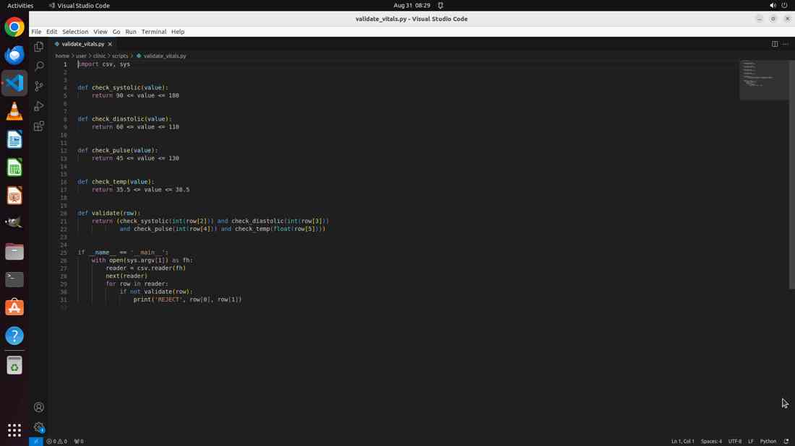
step 2 00:29:54
THINKINGThe popup is dismissed. Now let me open a terminal to explore the file system and find the vitals spreadsheet. Let me open a terminal via Terminal menu.
ACTIONThe popup is dismissed. Now let me open a terminal to find the vitals spreadsheet.
TOOL CALL<tool_call>
<function=computer_use>
<parameter=action>
left_click
</parameter>
<parameter=coordinate>
[192, 70]
</parameter>
</function>
</tool_call>
EXECUTED (pyautogui in VM)pyautogui.click(369, 75)
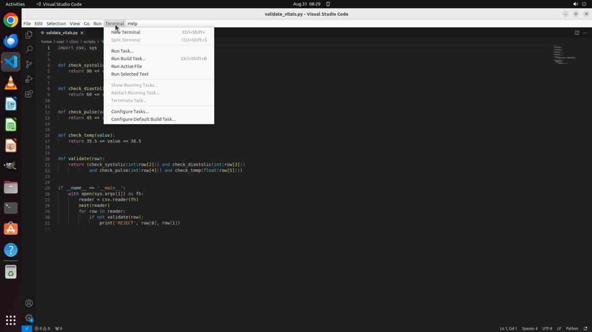
step 3 00:30:03
THINKINGLet me click "New Terminal".
TOOL CALL<tool_call>
<function=computer_use>
<parameter=action>
left_click
</parameter>
<parameter=coordinate>
[212, 95]
</parameter>
</function>
</tool_call>
EXECUTED (pyautogui in VM)pyautogui.click(407, 102)
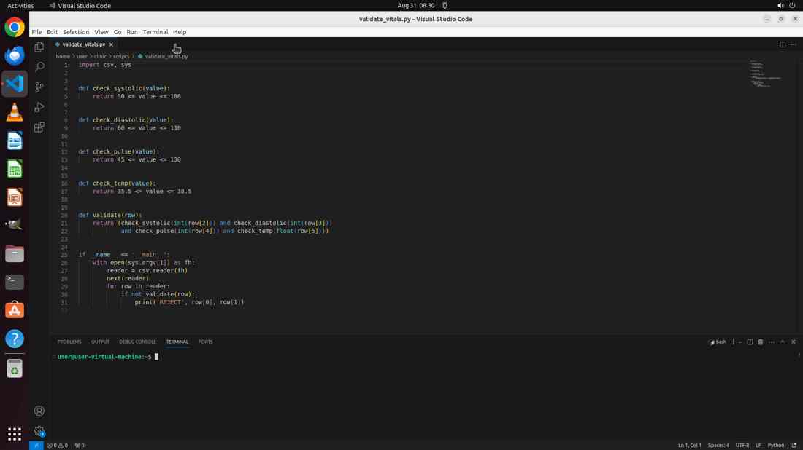
step 4 00:30:10
THINKINGA terminal is open. Let me explore the file system. The script is at home > user > clinic > scripts > validate_vitals.py. Let me look at the clinic folder to find the spreadsheet.
ACTIONThe terminal is open. Let me explore the clinic folder to find the vitals spreadsheet.
TOOL CALL<tool_call>
<function=computer_use>
<parameter=action>
left_click
</parameter>
<parameter=coordinate>
[468, 791]
</parameter>
</function>
</tool_call>
EXECUTED (pyautogui in VM)pyautogui.click(899, 855)
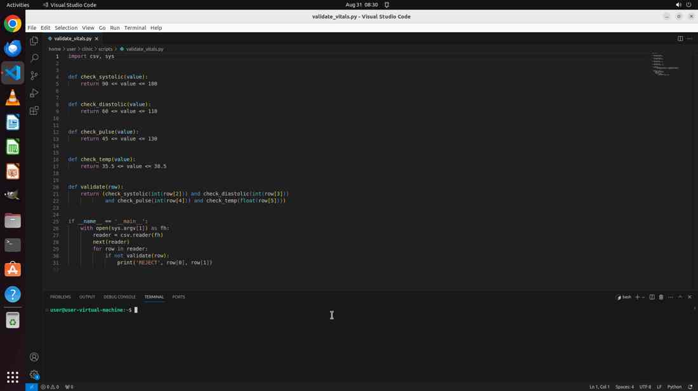
step 5 00:30:16
THINKINGLet me type a command to explore the clinic folder.
TOOL CALL<tool_call>
<function=computer_use>
<parameter=action>
type
</parameter>
<parameter=text>
ls -la ~/clinic/ && echo "---" && find ~/clinic -type f
</parameter>
</function>
</tool_call>
EXECUTED (pyautogui in VM)pyautogui.typewrite("ls -la ~/clinic/ && echo \"---\" && find ~/clinic -type f")
step 6 00:30:29
THINKINGLet me press Enter.
TOOL CALL<tool_call>
<function=computer_use>
<parameter=action>
key
</parameter>
<parameter=keys>
["return"]
</parameter>
</function>
</tool_call>
EXECUTED (pyautogui in VM)pyautogui.press("return")
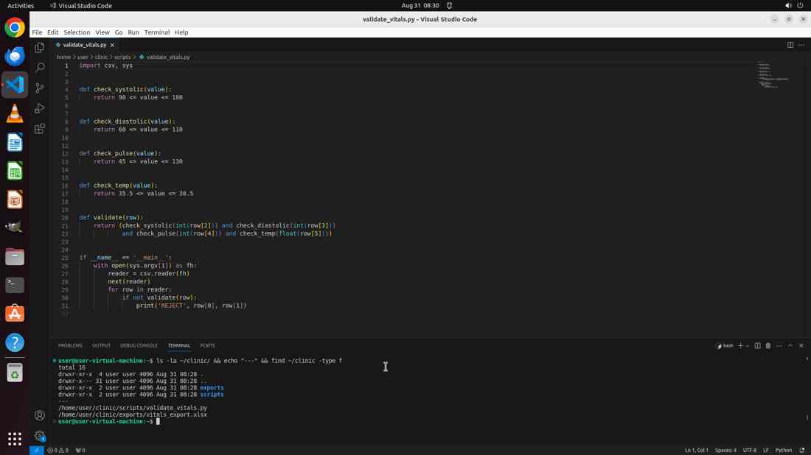
step 7 00:30:44
THINKINGI found:
- /home/user/clinic/scripts/validate_vitals.py
- /home/user/clinic/exports/vitals_export.xlsx
The vitals spreadsheet is /home/user/clinic/exports/vitals_export.xlsx (an Excel file). I need to read this. Let me use Python to read it. First let me check if pandas/openpyxl is available. Let me write a Python script to read it.
Let me first check the content of the xlsx file. I'll use python with openpyxl or pandas. Let me check what's available.
ACTIONI found the spreadsheet at `/home/user/clinic/exports/vitals_export.xlsx`. Let me read it with Python. First let me check what libraries are available.
TOOL CALL<tool_call>
<function=computer_use>
<parameter=action>
type
</parameter>
<parameter=text>
python3 -c "import openpyxl; print('openpyxl ok')" ; python3 -c "import pandas; print('pandas ok')"
</parameter>
</function>
</tool_call>
EXECUTED (pyautogui in VM)pyautogui.typewrite("python3 -c \"import openpyxl; print('openpyxl ok')\" ; python3 -c \"import pandas; print('pandas ok')\"")
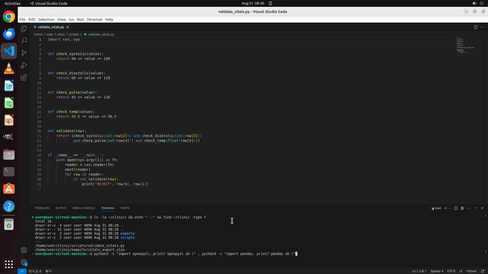
step 8 00:30:57
THINKINGWait, I already typed the command but it seems the previous command's output wasn't showing. Let me press Enter to run this new command.
Actually, looking more carefully, the terminal shows the previous command output already:
- /home/user/clinic/scripts/validate_vitals.py
- /home/user/clinic/exports/vitals_export.xlsx
And now I have a new command typed. Let me press Enter.
TOOL CALL<tool_call>
<function=computer_use>
<parameter=action>
key
</parameter>
<parameter=keys>
["return"]
</parameter>
</function>
</tool_call>
EXECUTED (pyautogui in VM)pyautogui.press("return")
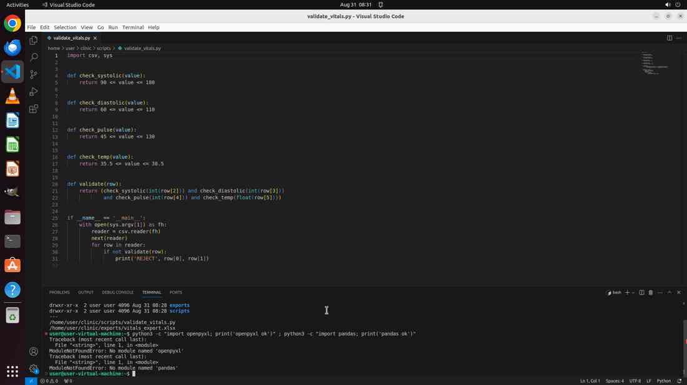
step 9 00:31:12
THINKINGNeither openpyxl nor pandas is installed. I need to read the xlsx file. Let me install openpyxl via pip, or I can unzip the xlsx (since xlsx is a zip archive of XML files) and parse the XML directly.
Actually, the simplest approach: install openpyxl. Let me try pip install. But there might not be internet. The system says internet access is available. Let me try pip install openpyxl.
Actually, a more robust approach that doesn't need internet: xlsx is a zip file. I can use Python's zipfile and xml to parse the shared strings and sheet data. But that's complex. Let me first try pip install.
Let me try: pip3 install openpyxl
ACTIONNeither library is installed. Let me install openpyxl to read the xlsx file.
TOOL CALL<tool_call>
<function=computer_use>
<parameter=action>
type
</parameter>
<parameter=text>
pip3 install openpyxl 2>&1 | tail -5
</parameter>
</function>
</tool_call>
EXECUTED (pyautogui in VM)pyautogui.typewrite("pip3 install openpyxl 2>&1 | tail -5")

step 10 00:31:23
THINKINGThe command is typed. Let me press Enter and wait for it to install.
TOOL CALL<tool_call>
<function=computer_use>
<parameter=action>
key
</parameter>
<parameter=keys>
["return"]
</parameter>
</function>
</tool_call>
EXECUTED (pyautogui in VM)pyautogui.press("return")
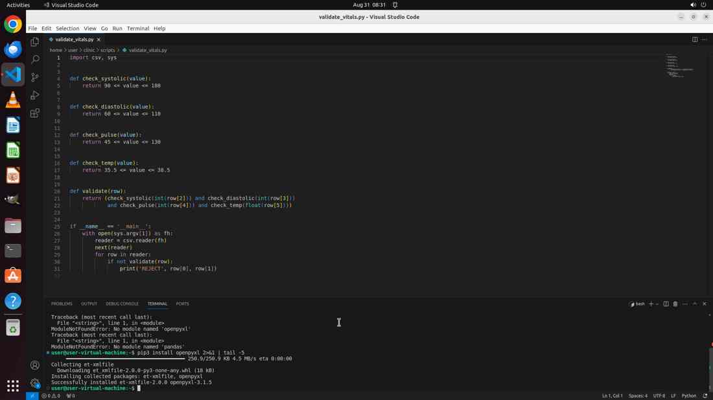
step 11 00:31:48
THINKINGopenpyxl-3.1.5 was successfully installed. Now let me write a Python script to read the xlsx file and print its contents, and also determine which rows would be rejected by the validation logic.
Let me write a Python script that:
1. Reads the xlsx file
2. Prints the header and all rows
3. Applies the validation logic (mirroring the script) to determine which rows are rejected and why
Let me create a script in the terminal. Actually, let me first just dump the xlsx content to understand the structure. The script expects a CSV with columns: row[0]=name, row[1]=id, row[2]=systolic, row[3]=diastolic, row[4]=pulse, row[5]=temp.
But wait - the script reads a CSV. The exported file is xlsx. So the "exported vitals spreadsheet" is xlsx. The script's validate() expects row indices 0-5. Let me read the xlsx to see the columns.
Let me write a Python one-liner or a small script. Given complexity, let me create a temp Python file. Actually I'll just do it inline with python3 -c but it's multi-line. Let me write it to a file using a heredoc.
Actually, let me be careful. The script's validate uses:
- int(row[2]) -> systolic
- int(row[3]) -> diastolic
- int(row[4]) -> pulse
- float(row[5]) -> temp
- row[0] -> name (printed), row[1] -> something (printed)
Let me read the xlsx and print header + rows. Let me write a helper script.
ACTIONopenpyxl is installed. Now let me write a Python script to read the spreadsheet and analyze which rows would be rejected. I'll create a helper script using a heredoc.
TOOL CALL<tool_call>
<function=computer_use>
<parameter=action>
type
</parameter>
<parameter=text>
cat > /tmp/analyze.py << 'EOF'
import openpyxl
wb = openpyxl.load_workbook('/home/user/clinic/exports/vitals_export.xlsx', data_only=True)
for ws in wb.worksheets:
print('=== SHEET:', ws.title, 'dims:', ws.dimensions, '===')
for i, row in enumerate(ws.iter_rows(values_only=True)):
print(i, row)
EOF
python3 /tmp/analyze.py
</parameter>
</function>
</tool_call>
EXECUTED (pyautogui in VM)pyautogui.typewrite("cat > /tmp/analyze.py << 'EOF'\nimport openpyxl\nwb = openpyxl.load_workbook('/home/user/clinic/exports/vitals_export.xlsx', data_only=True)\nfor ws in wb.worksheets:\n print('=== SHEET:', ws.title, 'dims:', ws.dimensions, '===')\n for i, row in enumerate(ws.iter_rows(values_only=True)):\n print(i, row)\nEOF\npython3 /tmp/analyze.py")
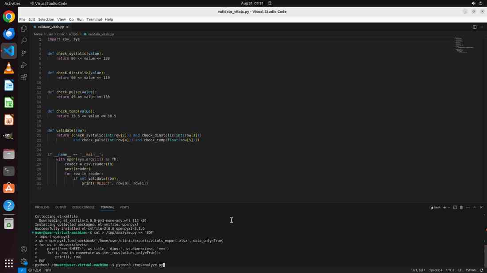
step 12 00:32:01
THINKINGThe heredoc was created and the command to run it is typed. Let me press Enter.
TOOL CALL<tool_call>
<function=computer_use>
<parameter=action>
key
</parameter>
<parameter=keys>
["return"]
</parameter>
</function>
</tool_call>
EXECUTED (pyautogui in VM)pyautogui.press("return")
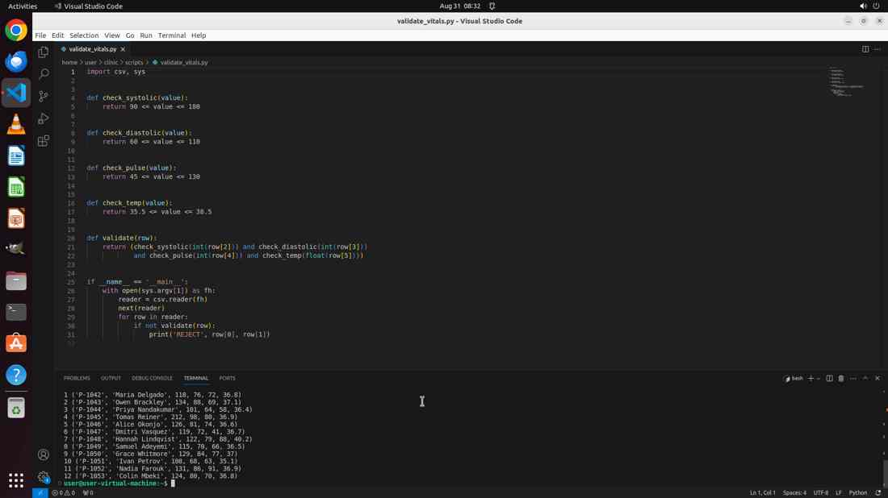
step 13.1 00:32:37
THINKINGI can see the data. Let me scroll up to see the header (row 0) and the full list. The output shows rows 1-12. I need to see the header (row 0) and confirm there are only 12 data rows. Let me scroll up in the terminal to see the sheet title and header.
Let me read the visible data:
- Row 1: ('P-1042', 'Maria Delgado', 118, 76, 72, 36.8)
- Row 2: ('P-1043', 'Owen Brackley', 134, 88, 69, 37.1)
- Row 3: ('P-1044', 'Priya Nandakumar', 101, 64, 58, 36.4)
- Row 4: ('P-1045', 'Tomas Reiner', 212, 98, 80, 36.9)
- Row 5: ('P-1046', 'Alice Okonjo', 126, 81, 74, 36.6)
- Row 6: ('P-1047', 'Dmitri Vasquez', 119, 72, 41, 36.7)
- Row 7: ('P-1048', 'Hannah Lindqvist', 122, 79, 88, 40.2)
- Row 8: ('P-1049', 'Samuel Adeyemi', 115, 70, 66, 36.5)
- Row 9: ('P-1050', 'Grace Whitmore', 129, 84, 77, 37)
- Row 10: ('P-1051', 'Ivan Petrov', 108, 68, 63, 35.1)
- Row 11: ('P-1052', 'Nadia Farouk', 131, 86, 91, 36.9)
- Row 12: ('P-1053', 'Colin Mbeki', 124, 80, 70, 36.8)
Wait, the script uses row[0] as the "name" (printed first) and row[1] as second. But here row[0] is the patient ID (P-1042) and row[1] is the patient name (Maria Delgado). So the columns are:
- row[0] = Patient ID (P-1042)
- row[1] = Patient Name (Maria Delgado)
- row[2] = Systolic (118)
- row[3] = Diastolic (76)
- row[4] = Pulse (72)
- row[5] = Temp (36.8)
Wait, but that means the header row 0 must be the actual header. Let me scroll up to see row 0 (header) and the sheet title. Actually the print shows index 0 would be the header. Let me scroll up to see it.
Actually, wait. Looking at the output, the first visible line is "1 ('P-1042'...". So row index 0 is the header which is above the visible area. Let me scroll up in the terminal.
Actually, I should reconsider. The task says "for every patient row in the exported vitals spreadsheet that the script's rules would reject, add a comment line above the matching rule in the script naming the patient and the value that breaks it."
So I need to:
1. Identify rejected rows
2. For each rejected row, identify which rule(s) it breaks
3. Add a comment above the matching rule (the function) naming the patient and value
But note: the script's validate() uses int(row[2]) for systolic. But in the xlsx, are these values integers or could there be non-numeric values? Let me check - the values all look numeric. But the task hints there could be issues. Let me re-examine.
Actually wait - I need to reconsider the mapping. The script prints row[0], row[1] on reject. So row[0] and row[1] are identifiers (ID and name). Then row[2]=systolic, row[3]=diastolic, row[4]=pulse, row[5]=temp.
Let me verify by checking the header. Let me scroll up.
Let me first scroll up to see row 0 (header).
ACTIONLet me scroll up in the terminal to see the header row and sheet title.
TOOL CALL<tool_call>
<function=computer_use>
<parameter=action>
mouse_move
</parameter>
<parameter=coordinate>
[500, 859]
</parameter>
</function>
</tool_call>
<tool_call>
<function=computer_use>
<parameter=action>
scroll
</parameter>
<parameter=pixels>
3
</parameter>
</function>
</tool_call>
EXECUTED (pyautogui in VM)pyautogui.moveTo(960, 928)
step 13.2 00:32:40
EXECUTED (pyautogui in VM)pyautogui.scroll(3)
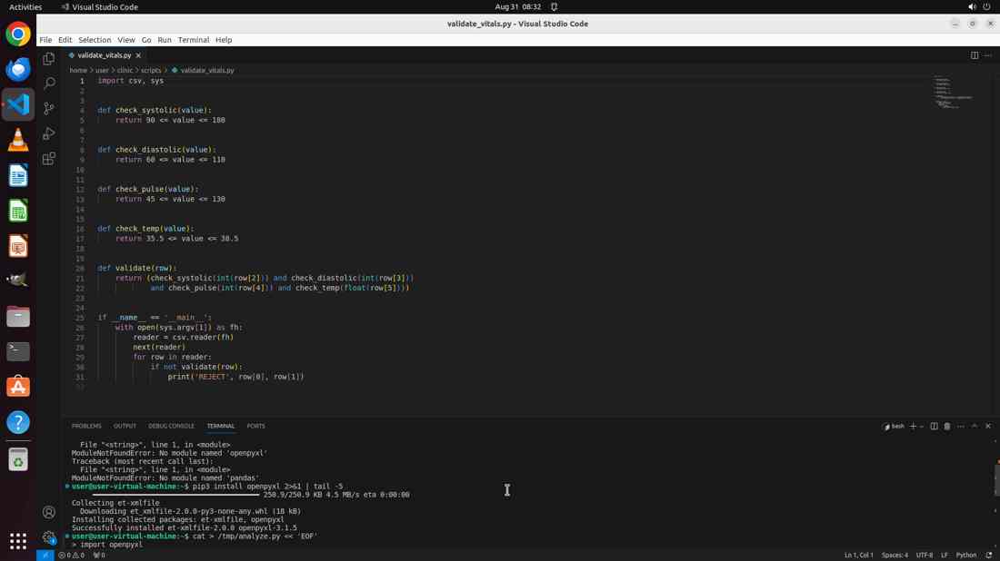
step 14.1 00:32:50
THINKINGI scrolled too far up. The output I need is below. Let me just re-run the analysis with a cleaner, more complete output. Let me scroll back down and then run a better script that does the full validation analysis. Actually, it would be more efficient to write a comprehensive analysis script that:
1. Reads the xlsx
2. Prints header
3. For each row, applies the validation rules (mirroring the script exactly) and reports which specific rules fail
Let me scroll down first to see the header row 0. Let me scroll down a bit.
TOOL CALL<tool_call>
<function=computer_use>
<parameter=action>
mouse_move
</parameter>
<parameter=coordinate>
[500, 859]
</parameter>
</function>
</tool_call>
<tool_call>
<function=computer_use>
<parameter=action>
scroll
</parameter>
<parameter=pixels>
-2
</parameter>
</function>
</tool_call>
EXECUTED (pyautogui in VM)pyautogui.moveTo(960, 928)
step 14.2 00:32:53
EXECUTED (pyautogui in VM)pyautogui.scroll(-2)
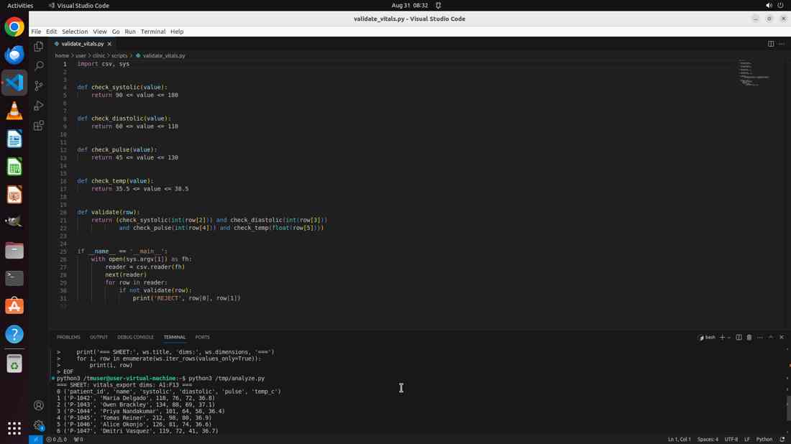
step 15.1 00:33:51
THINKINGNow I can see the header:
- Sheet: vitals_export, dims: A1:F13
- Row 0 (header): ('patient_id', 'name', 'systolic', 'diastolic', 'pulse', 'temp_c')
- Row 1: ('P-1042', 'Maria Delgado', 118, 76, 72, 36.8)
- Row 2: ('P-1043', 'Owen Brackley', 134, 88, 69, 37.1)
- Row 3: ('P-1044', 'Priya Nandakumar', 101, 64, 58, 36.4)
- Row 4: ('P-1045', 'Tomas Reiner', 212, 98, 80, 36.9)
- Row 5: ('P-1046', 'Alice Okonjo', 126, 81, 74, 36.6)
- Row 6: ('P-1047', 'Dmitri Vasquez', 119, 72, 41, 36.7)
And from before:
- Row 7: ('P-1048', 'Hannah Lindqvist', 122, 79, 88, 40.2)
- Row 8: ('P-1049', 'Samuel Adeyemi', 115, 70, 66, 36.5)
- Row 9: ('P-1050', 'Grace Whitmore', 129, 84, 77, 37)
- Row 10: ('P-1051', 'Ivan Petrov', 108, 68, 63, 35.1)
- Row 11: ('P-1052', 'Nadia Farouk', 131, 86, 91, 36.9)
- Row 12: ('P-1053', 'Colin Mbeki', 124, 80, 70, 36.8)
Dims A1:F13 means 13 rows total (1 header + 12 data rows). Good.
Columns:
- 0: patient_id
- 1: name
- 2: systolic
- 3: diastolic
- 4: pulse
- 5: temp_c
The script's validate() uses:
- int(row[2]) -> systolic, check 90<=v<=180
- int(row[3]) -> diastolic, check 60<=v<=110
- int(row[4]) -> pulse, check 45<=v<=130
- float(row[5]) -> temp, check 35.5<=v<=38.5
Now let me apply the rules to each patient:
1. Maria Delgado (P-1042): systolic=118 (90-180 OK), diastolic=76 (60-110 OK), pulse=72 (45-130 OK), temp=36.8 (35.5-38.5 OK) → PASS
2. Owen Brackley (P-1043): systolic=134 (OK), diastolic=88 (OK), pulse=69 (OK), temp=37.1 (OK) → PASS
3. Priya Nandakumar (P-1044): systolic=101 (OK), diastolic=64 (OK), pulse=58 (OK), temp=36.4 (OK) → PASS
4. Tomas Reiner (P-1045): systolic=212 (FAIL, >180), diastolic=98 (OK), pulse=80 (OK), temp=36.9 (OK) → REJECT (systolic)
5. Alice Okonjo (P-1046): systolic=126 (OK), diastolic=81 (OK), pulse=74 (OK), temp=36.6 (OK) → PASS
6. Dmitri Vasquez (P-1047): systolic=119 (OK), diastolic=72 (OK), pulse=41 (FAIL, <45), temp=36.7 (OK) → REJECT (pulse)
7. Hannah Lindqvist (P-1048): systolic=122 (OK), diastolic=79 (OK), pulse=88 (OK), temp=40.2 (FAIL, >38.5) → REJECT (temp)
8. Samuel Adeyemi (P-1049): systolic=115 (OK), diastolic=70 (OK), pulse=66 (OK), temp=36.5 (OK) → PASS
9. Grace Whitmore (P-1050): systolic=129 (OK), diastolic=84 (OK), pulse=77 (OK), temp=37 (OK) → PASS
10. Ivan Petrov (P-1051): systolic=108 (OK), diastolic=68 (OK), pulse=63 (OK), temp=35.1 (FAIL, <35.5) → REJECT (temp)
11. Nadia Farouk (P-1052): systolic=131 (OK), diastolic=86 (OK), pulse=91 (OK), temp=36.9 (OK) → PASS
12. Colin Mbeki (P-1053): systolic=124 (OK), diastolic=80 (OK), pulse=70 (OK), temp=36.8 (OK) → PASS
So the rejected rows:
- Tomas Reiner (P-1045): systolic=212 breaks check_systolic (max 180)
- Dmitri Vasquez (P-1047): pulse=41 breaks check_pulse (min 45)
- Hannah Lindqvist (P-1048): temp=40.2 breaks check_temp (max 38.5)
- Ivan Petrov (P-1051): temp=35.1 breaks check_temp (min 35.5)
Wait, but I should double check whether the values in the xlsx might be strings rather than numbers, which could cause int()/float() to fail. But the output shows them as numbers (no quotes), so openpyxl read them as numeric. Good.
But wait - I should also verify these values more carefully. Let me write a proper analysis script that replicates the validation logic exactly, to be 100% sure. This avoids manual errors. Let me write a script that mimics the exact functions.
Actually, I'm fairly confident in my manual analysis. But to be safe and rigorous, let me run a script that applies the exact logic. Let me write it. This is important because the task requires precision.
Let me create a validation analysis script. I'll be careful about the exact thresholds:
- check_systolic: 90 <= value <= 180
- check_diastolic: 60 <= value <= 110
- check_pulse: 45 <= value <= 130
- check_temp: 35.5 <= value <= 38.5
Let me write the script to output, for each row, which checks fail.
I want to be very careful here. Let me also double-check the data by re-reading. Let me write a comprehensive script.
Actually, I realize I should double-check: are there exactly 12 data rows and is the data complete? dims A1:F13 = 13 rows. Row 0 = header, rows 1-12 = 12 data rows. Yes.
Let me write the definitive analysis script.
ACTIONNow I can see the full structure. The header is `('patient_id', 'name', 'systolic', 'diastolic', 'pulse', 'temp_c')`. Let me write a definitive analysis script that replicates the exact validation logic to identify every rejected row and which rule it breaks.
TOOL CALL<tool_call>
<function=computer_use>
<parameter=action>
mouse_move
</parameter>
<parameter=coordinate>
[500, 859]
</parameter>
</function>
</tool_call>
<tool_call>
<function=computer_use>
<parameter=action>
scroll
</parameter>
<parameter=pixels>
-5
</parameter>
</function>
</tool_call>
EXECUTED (pyautogui in VM)pyautogui.moveTo(960, 928)
step 15.2 00:33:54
EXECUTED (pyautogui in VM)pyautogui.scroll(-5)
step 16 00:34:23
THINKINGGood, I'm back at the prompt. Now let me write the definitive analysis script that replicates the exact validation logic. Let me click at the terminal prompt first.
ACTIONI'm at the prompt now. Let me write a definitive analysis script that replicates the exact validation logic.
TOOL CALL<tool_call>
<function=computer_use>
<parameter=action>
left_click
</parameter>
<parameter=coordinate>
[500, 967]
</parameter>
</function>
</tool_call>
EXECUTED (pyautogui in VM)pyautogui.click(960, 1045)
step 17 00:34:35
THINKINGNow let me write the definitive analysis script. I'll replicate the exact logic of the validate function.
TOOL CALL<tool_call>
<function=computer_use>
<parameter=action>
type
</parameter>
<parameter=text>
cat > /tmp/check.py << 'EOF'
import openpyxl
wb = openpyxl.load_workbook('/home/user/clinic/exports/vitals_export.xlsx', data_only=True)
ws = wb.active
def c_sys(v): return 90 <= v <= 180
def c_dia(v): return 60 <= v <= 110
def c_pul(v): return 45 <= v <= 130
def c_tmp(v): return 35.5 <= v <= 38.5
rows = list(ws.iter_rows(values_only=True))
print('HEADER:', rows[0])
for r in rows[1:]:
pid, name, sys, dia, pul, tmp = r
fails = []
if not c_sys(int(sys)): fails.append(('systolic', sys))
if not c_dia(int(dia)): fails.append(('diastolic', dia))
if not c_pul(int(pul)): fails.append(('pulse', pul))
if not c_tmp(float(tmp)): fails.append(('temp', tmp))
status = 'REJECT' if fails else 'pass'
print(f'{pid} {name}: sys={sys} dia={dia} pul={pul} tmp={tmp} -> {status}')
for f in fails:
print(' BREAKS:', f)
EOF
python3 /tmp/check.py
</parameter>
</function>
</tool_call>
EXECUTED (pyautogui in VM)pyautogui.typewrite("cat > /tmp/check.py << 'EOF'\nimport openpyxl\nwb = openpyxl.load_workbook('/home/user/clinic/exports/vitals_export.xlsx', data_only=True)\nws = wb.active\ndef c_sys(v): return 90 <= v <= 180\ndef c_dia(v): return 60 <= v <= 110\ndef c_pul(v): return 45 <= v <= 130\ndef c_tmp(v): return 35.5 <= v <= 38.5\nrows = list(ws.iter_rows(values_only=True))\nprint('HEADER:', rows[0])\nfor r in rows[1:]:\n pid, name, sys, dia, pul, tmp = r\n fails = []\n if not c_sys(int(sys)): fails.append(('systolic', sys))\n if not c_dia(int(dia)): fails.append(('diastolic', dia))\n if not c_pul(int(pul)): fails.append(('pulse', pul))\n if not c_tmp(float(tmp)): fails.append(('temp', tmp))\n status = 'REJECT' if fails else 'pass'\n print(f'{pid} {name}: sys={sys} dia={dia} pul={pul} tmp={tmp} -> {status}')\n for f in fails:\n print(' BREAKS:', f)\nEOF\npython3 /tmp/check.py")
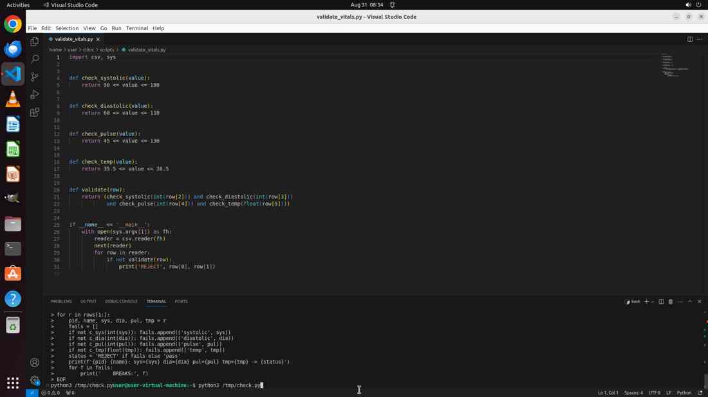
step 18 00:34:43
THINKINGThe command is typed. Let me press Enter.
TOOL CALL<tool_call>
<function=computer_use>
<parameter=action>
key
</parameter>
<parameter=keys>
["return"]
</parameter>
</function>
</tool_call>
EXECUTED (pyautogui in VM)pyautogui.press("return")
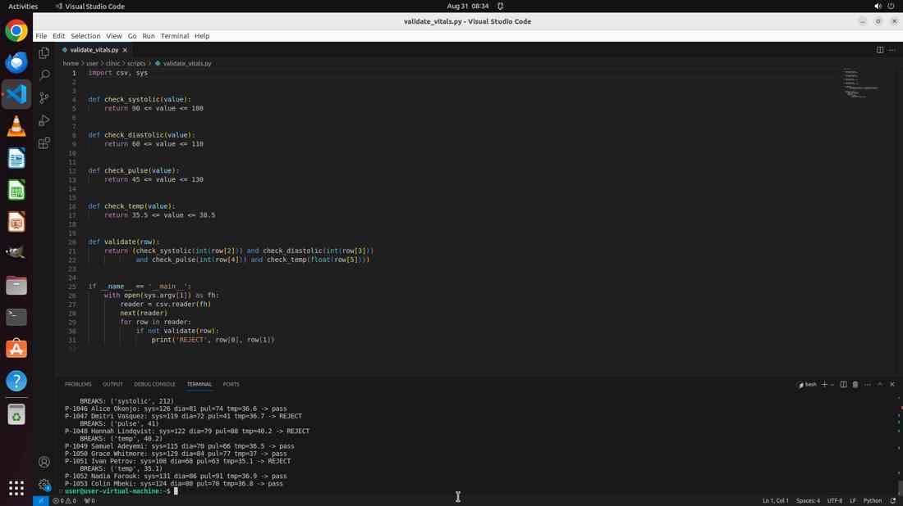
step 19.1 00:34:59
THINKINGNow I can see the output. Let me read it:
- BREAKS: ('systolic', 212) - this is for Tomas Reiner (P-1045) which is cut off at top
- P-1046 Alice Okonjo: sys=126 dia=81 pul=74 tmp=36.6 -> pass
- P-1047 Dmitri Vasquez: sys=119 dia=72 pul=41 tmp=36.7 -> REJECT
BREAKS: ('pulse', 41)
- P-1048 Hannah Lindqvist: sys=122 dia=79 pul=88 tmp=40.2 -> REJECT
BREAKS: ('temp', 40.2)
- P-1049 Samuel Adeyemi: sys=115 dia=70 pul=66 tmp=36.5 -> pass
- P-1050 Grace Whitmore: sys=129 dia=84 pul=77 tmp=37 -> pass
- P-1051 Ivan Petrov: sys=108 dia=68 pul=63 tmp=35.1 -> REJECT
BREAKS: ('temp', 35.1)
- P-1052 Nadia Farouk: sys=131 dia=86 pul=91 tmp=36.9 -> pass
- P-1053 Colin Mbeki: sys=124 dia=80 pul=70 tmp=36.8 -> pass
Let me scroll up to see the top of the output (Tomas Reiner and earlier rows).
ACTIONThe analysis confirms my findings. Let me scroll up to see the top of the output to confirm the first rows.
TOOL CALL<tool_call>
<function=computer_use>
<parameter=action>
mouse_move
</parameter>
<parameter=coordinate>
[500, 859]
</parameter>
</function>
</tool_call>
<tool_call>
<function=computer_use>
<parameter=action>
scroll
</parameter>
<parameter=pixels>
3
</parameter>
</function>
</tool_call>
EXECUTED (pyautogui in VM)pyautogui.moveTo(960, 928)
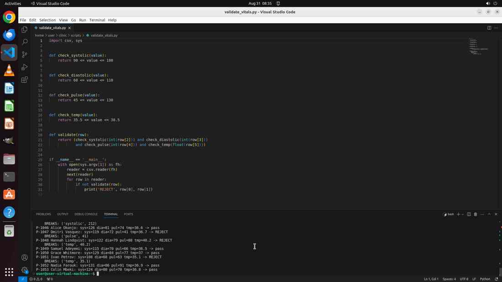
step 19.2 00:35:02
EXECUTED (pyautogui in VM)pyautogui.scroll(3)
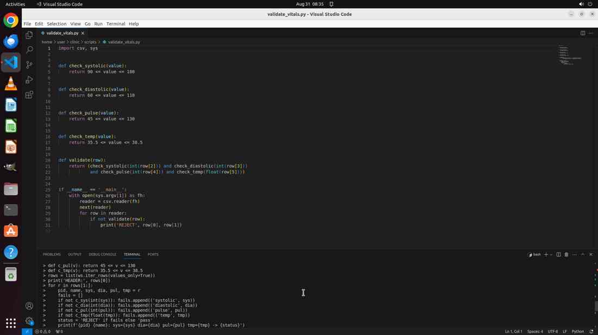
step 20.1 00:35:17
THINKINGThis scrolled up to show the script source, not the output. The output starts after the "python3 /tmp/check.py" command. Let me scroll down a bit to see the beginning of the output (HEADER and first rows).
TOOL CALL<tool_call>
<function=computer_use>
<parameter=action>
mouse_move
</parameter>
<parameter=coordinate>
[500, 859]
</parameter>
</function>
</tool_call>
<tool_call>
<function=computer_use>
<parameter=action>
scroll
</parameter>
<parameter=pixels>
-2
</parameter>
</function>
</tool_call>
EXECUTED (pyautogui in VM)pyautogui.moveTo(960, 928)
step 20.2 00:35:20
EXECUTED (pyautogui in VM)pyautogui.scroll(-2)
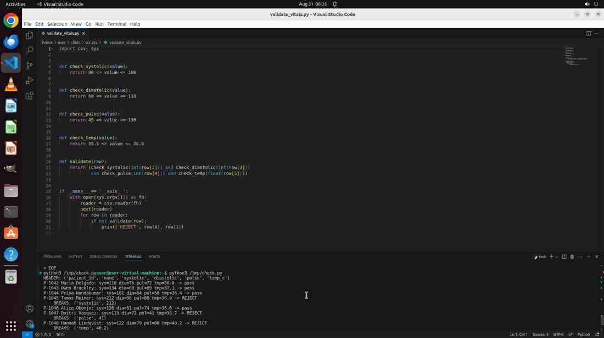
step 21 00:37:26
THINKINGNow I can see the full output clearly:
HEADER: ('patient_id', 'name', 'systolic', 'diastolic', 'pulse', 'temp_c')
- P-1042 Maria Delgado: sys=118 dia=76 pul=72 tmp=36.8 -> pass
- P-1043 Owen Brackley: sys=134 dia=88 pul=69 tmp=37.1 -> pass
- P-1044 Priya Nandakumar: sys=101 dia=64 pul=58 tmp=36.4 -> pass
- P-1045 Tomas Reiner: sys=212 dia=98 pul=80 tmp=36.9 -> REJECT
BREAKS: ('systolic', 212)
- P-1046 Alice Okonjo: sys=126 dia=81 pul=74 tmp=36.6 -> pass
- P-1047 Dmitri Vasquez: sys=119 dia=72 pul=41 tmp=36.7 -> REJECT
BREAKS: ('pulse', 41)
- P-1048 Hannah Lindqvist: sys=122 dia=79 pul=88 tmp=40.2 -> REJECT
BREAKS: ('temp', 40.2)
- P-1049 Samuel Adeyemi: sys=115 dia=70 pul=66 tmp=36.5 -> pass
- P-1050 Grace Whitmore: sys=129 dia=84 pul=77 tmp=37 -> pass
- P-1051 Ivan Petrov: sys=108 dia=68 pul=63 tmp=35.1 -> REJECT
BREAKS: ('temp', 35.1)
- P-1052 Nadia Farouk: sys=131 dia=86 pul=91 tmp=36.9 -> pass
- P-1053 Colin Mbeki: sys=124 dia=80 pul=70 tmp=36.8 -> pass
So the confirmed rejections:
1. P-1045 Tomas Reiner: systolic = 212 (breaks check_systolic, > 180)
2. P-1047 Dmitri Vasquez: pulse = 41 (breaks check_pulse, < 45)
3. P-1048 Hannah Lindqvist: temp = 40.2 (breaks check_temp, > 38.5)
4. P-1051 Ivan Petrov: temp = 35.1 (breaks check_temp, < 35.5)
4 rejected rows out of 12. This matches my manual analysis exactly.
Now the task:
1. For every patient row that the script's rules would reject, add a comment line above the matching rule in the script naming the patient and the value that breaks it.
The "matching rule" - the function that breaks:
- check_systolic: Tomas Reiner, systolic 212
- check_pulse: Dmitri Vasquez, pulse 41
- check_temp: Hannah Lindqvist, temp 40.2 AND Ivan Petrov, temp 35.1
So I need to add:
- Above check_systolic: a comment naming Tomas Reiner and value 212
- Above check_pulse: a comment naming Dmitri Vasquez and value 41
- Above check_temp: comments naming Hannah Lindqvist (40.2) and Ivan Petrov (35.1)
Note: check_diastolic has no rejections.
2. Write overall verdict as a comment block at the top of the script.
Overall verdict: 4 of 12 patient rows would be rejected. The export fails the intake check because... let me summarize which patients and why.
Now let me think about the exact placement. The task says "add a comment line above the matching rule in the script". The "rule" is the function like check_systolic. So a comment line directly above the `def check_systolic(value):` line.
For check_temp, two patients break it, so two comment lines above check_temp.
Let me now edit the script. I'll do this via the terminal using a Python script to precisely rewrite the file, OR I can edit it directly in VS Code. Editing directly in VS Code is more reliable for a text file and I can see the result. But precise multi-line editing in the GUI can be error-prone.
Actually, the most reliable approach is to write the new file content directly using a heredoc in the terminal, since I know exactly what the file should contain. Let me reconstruct the full file.
Current file content:
```
import csv, sys
def check_systolic(value):
return 90 <= value <= 180
def check_diastolic(value):
return 60 <= value <= 110
def check_pulse(value):
return 45 <= value <= 130
def check_temp(value):
return 35.5 <= value <= 38.5
def validate(row):
return (check_systolic(int(row[2])) and check_diastolic(int(row[3]))) \
and check_pulse(int(row[4])) and check_temp(float(row[5]))
if __name__ == '__main__':
with open(sys.argv[1]) as fh:
reader = csv.reader(fh)
next(reader)
for row in reader:
if not validate(row):
print('REJECT', row[0], row[1])
```
Wait, I need to verify the exact content including the backslash continuation on line 21-22. Looking at the editor:
Line 21: ` return (check_systolic(int(row[2])) and check_diastolic(int(row[3]))) \`
Line 22: ` and check_pulse(int(row[4])) and check_temp(float(row[5]))`
Yes there's a backslash at the end of line 21.
Now, rather than rewriting the whole file (which risks introducing subtle differences), I think the cleaner approach that's less error prone is to insert comment lines at specific positions. But actually, since I know the exact content, writing the whole file with a heredoc is clean and deterministic. However, if my transcription of the original is even slightly off (e.g., the exact spacing of the continuation line), I'd be altering code.
Let me reconsider. The safest approach is to edit within the existing file without changing existing code lines. I can do this via VS Code GUI editing, placing cursor at specific lines and adding comment lines above.
But GUI editing for inserting lines above specific lines is doable:
- Click at start of line 4 (def check_systolic), press Home, then type the comment + newline. But that would push content down. Actually to add a line ABOVE, I place cursor at the beginning of the def line, then type the comment and press Enter - but that inserts the comment on the current line and pushes def down. That works if I type comment then Enter.
Actually, a cleaner GUI method: Click at the very start of the "def check_systolic" line, type the comment text, then press Enter. This creates:
```
# comment
def check_systolic(value):
```
Wait no. If cursor is at column 0 of "def check_systolic", and I type "# REJECTED: ..." then press Enter, the result is:
Line: "# REJECTED: ..."
then the "def check_systolic(value):" gets pushed to the next line.
Yes that works. The cursor was before "def", I type the comment, then Enter moves the rest down.
Let me do this for each rule. Let me be careful about which lines.
But there's a subtlety: as I insert lines, line numbers shift. I'll work from top to bottom so that after inserting above check_systolic (line 4), everything below shifts. Then for check_pulse and check_temp I need to re-locate them.
Actually, doing it via GUI is more work but preserves existing code exactly. Alternatively, I can do a very precise sed/Python-based insertion that inserts lines at specific line numbers without touching other lines.
Let me think about a robust Python approach: read the file lines, then insert comment lines before the lines that start with "def check_systolic", "def check_pulse", "def check_temp", and insert the verdict block at the top. This way I don't need to retype any existing code - I only insert new lines. This is the safest.
Let me write a Python script that does this:
1. Read the file
2. Build the verdict block (list of lines)
3. For each line in the file:
- if line is "def check_systolic(value):", prepend comment lines before it
- if line is "def check_pulse(value):", prepend comment lines
- if line is "def check_temp(value):", prepend comment lines
4. Prepend the verdict block at the very top
5. Write back
This is clean and doesn't alter existing code. Let me do that.
But wait - I need to be careful about matching the exact def line text. Let me match on the line content. The lines are:
- `def check_systolic(value):`
- `def check_pulse(value):`
- `def check_temp(value):`
I'll match lines where line.strip() == 'def check_systolic(value):' etc. That's safe.
Now let me design the comment content.
For check_systolic:
`# REJECTED: Tomas Reiner (P-1045) - systolic 212 out of range 90-180`
For check_pulse:
`# REJECTED: Dmitri Vasquez (P-1047) - pulse 41 out of range 45-130`
For check_temp:
`# REJECTED: Hannah Lindqvist (P-1048) - temp 40.2 out of range 35.5-38.5`
`# REJECTED: Ivan Petrov (P-1051) - temp 35.1 out of range 35.5-38.5`
The task says "add a comment line above the matching rule in the script naming the patient and the value that breaks it." So each comment names the patient and the value. Good.
Overall verdict comment block at the top:
```
# ============================================================
# VERDICT: The vitals export FAILS the intake check.
# 4 of 12 patient rows are rejected by the current rules:
# - Tomas Reiner (P-1045): systolic 212 (max 180)
# - Dmitri Vasquez (P-1047): pulse 41 (min 45)
# - Hannah Lindqvist (P-1048): temp 40.2 (max 38.5)
# - Ivan Petrov (P-1051): temp 35.1 (min 35.5)
# The remaining 8 rows pass all checks.
# ============================================================
```
This is a good verdict block.
Now, let me write the Python script to do the insertion. Let me use the exact def line matching.
Actually, I realize I should double check: does the task want me to also handle check_diastolic? No, no patient breaks diastolic. So no comment there.
Also I should reconsider: should the verdict mention "4 of 12"? The spreadsheet has 12 data rows. Yes.
Let me also reconsider whether I should keep the existing blank line structure. When I prepend the verdict block at the top, I'll add the block then the original `import csv, sys` line follows. I should add a couple blank lines for readability. Let me structure:
verdict block lines, then 2 blank lines, then the rest.
Let me write the script. I'll insert the comment lines right before the matching def line, and prepend verdict block at the very top (before line 0).
Let me be careful with the heredoc - I'll quote 'EOF' to avoid variable expansion, and I'll write the comment strings carefully. Since the comments contain no special shell chars that matter inside single-quoted heredoc (except I'm using a quoted heredoc so no expansion), it's fine.
Let me write it. I'll create /tmp/patch.py.
Actually, I want to make sure the script preserves the file's trailing newline and existing structure. Let me read with splitlines(keepends=False) - no, better to read as text, split into lines with splitlines(), process, then join with '\n' and add a trailing newline.
Let me write:
```python
import io
p = '/home/user/clinic/scripts/validate_vitals.py'
with open(p) as f:
src = f.read()
lines = src.splitlines()
verdict = [
"# ============================================================",
"# VERDICT: The vitals export FAILS the intake check.",
"# 4 of 12 patient rows are rejected by the current rules:",
"# - Tomas Reiner (P-1045): systolic 212 (allowed 90-180)",
"# - Dmitri Vasquez (P-1047): pulse 41 (allowed 45-130)",
"# - Hannah Lindqvist (P-1048): temp 40.2 (allowed 35.5-38.5)",
"# - Ivan Petrov (P-1051): temp 35.1 (allowed 35.5-38.5)",
"# The other 8 rows pass every rule.",
"# ============================================================",
]
comments = {
"def check_systolic(value):": ["# REJECTED: Tomas Reiner (P-1045) - systolic 212 exceeds max 180"],
"def check_pulse(value):": ["# REJECTED: Dmitri Vasquez (P-1047) - pulse 41 below min 45"],
"def check_temp(value):": [
"# REJECTED: Hannah Lindqvist (P-1048) - temp 40.2 exceeds max 38.5",
"# REJECTED: Ivan Petrov (P-1051) - temp 35.1 below min 35.5",
],
}
out = list(verdict)
out.append("")
out.append("")
for line in lines:
if line.strip() in comments:
out.extend(comments[line.strip()])
out.append(line)
with open(p, 'w') as f:
f.write("\n".join(out) + "\n")
print("done")
```
Wait, there's a subtlety. The `out = list(verdict); out.append(""); out.append("")` then iterate lines. The first line is `import csv, sys`. So the file becomes:
```
# ============
# ...verdict...
# ============
import csv, sys
def check_systolic(value):
return ...
```
Wait no - the comment for check_systolic is inserted right before the `def check_systolic(value):` line, so:
```
...
def check_systolic:
```
becomes
```
# REJECTED: Tomas Reiner...
def check_systolic(value):
return 90 <= value <= 180
```
Good.
But I need to double check the blank lines. Originally between `import csv, sys` and `def check_systolic` there are 2 blank lines (lines 2,3). My output:
- verdict (9 lines)
- ""
- ""
- "import csv, sys"
- "" (original line 2)
- "" (original line 3)
- "# REJECTED: Tomas Reiner..." (inserted)
- "def check_systolic(value):"
- " return 90 <= value <= 180"
- ...
So we have verdict, 2 blank, import, 2 blank, comment, def. That's fine - the comment is directly above the def.
Now, one concern: does `line.strip() in comments` work? The dict keys are the stripped def lines. For line "def check_systolic(value):", line.strip() = "def check_systolic(value):" which is a key. Good. For other lines, strip won't match. Good. But careful: what about a line like " return 90 <= value <= 180"? strip = "return 90 <= value <= 180", not a key. Good.
This is safe. Let me write and run it.
Actually, let me reconsider the verdict wording. The task: "write your overall verdict as a comment block at the top of the script." So the verdict should state the overall conclusion: the export fails the intake check because 4 of 12 rows are rejected. Good.
Let me also make sure I use patient names as they appear. Names: Tomas Reiner, Dmitri Vasquez, Hannah Lindqvist, Ivan Petrov. And IDs P-1045, P-1047, P-1048, P-1051.
Now, should I name the patient by name, ID, or both? The task says "naming the patient". I'll include both name and ID for clarity. That's the most unambiguous.
Let me write the patch script now. I'll use a single-quoted heredoc so nothing is expanded. The content has no single quotes (I used parentheses not apostrophes). Good. Actually "(allowed 90-180)" - fine. No apostrophes. Good.
Let me write it.
ACTIONI now have the complete, confirmed analysis. The four rejected rows are:
- **Tomas Reiner (P-1045)**: systolic 212 (breaks check_systolic, max 180)
- **Dmitri Vasquez (P-1047)**: pulse 41 (breaks check_pulse, min 45)
- **Hannah Lindqvist (P-1048)**: temp 40.2 (breaks check_temp, max 38.5)
- **Ivan Petrov (P-1051)**: temp 35.1 (breaks check_temp, min 35.5)
Now I'll patch the script by inserting comment lines above each matching rule and a verdict block at the top, without altering any existing code. I'll use a Python script that only inserts lines (matching the exact `def` lines).
TOOL CALL<tool_call>
<function=computer_use>
<parameter=action>
type
</parameter>
<parameter=text>
cat > /tmp/patch.py << 'EOF'
p = '/home/user/clinic/scripts/validate_vitals.py'
with open(p) as f:
lines = f.read().splitlines()
verdict = [
"# ============================================================",
"# VERDICT: The vitals export FAILS the intake check.",
"# 4 of 12 patient rows are rejected by the current rules:",
"# - Tomas Reiner (P-1045): systolic 212 (allowed 90-180)",
"# - Dmitri Vasquez (P-1047): pulse 41 (allowed 45-130)",
"# - Hannah Lindqvist (P-1048): temp 40.2 (allowed 35.5-38.5)",
"# - Ivan Petrov (P-1051): temp 35.1 (allowed 35.5-38.5)",
"# The other 8 rows pass every rule.",
"# ============================================================",
]
comments = {
"def check_systolic(value):": [
"# REJECTED: Tomas Reiner (P-1045) - systolic 212 exceeds max 180",
],
"def check_pulse(value):": [
"# REJECTED: Dmitri Vasquez (P-1047) - pulse 41 below min 45",
],
"def check_temp(value):": [
"# REJECTED: Hannah Lindqvist (P-1048) - temp 40.2 exceeds max 38.5",
"# REJECTED: Ivan Petrov (P-1051) - temp 35.1 below min 35.5",
],
}
out = list(verdict)
out.append("")
out.append("")
for line in lines:
if line.strip() in comments:
out.extend(comments[line.strip()])
out.append(line)
with open(p, 'w') as f:
f.write("\n".join(out) + "\n")
print("PATCHED OK")
EOF
python3 /tmp/patch.py
</parameter>
</function>
</tool_call>
EXECUTED (pyautogui in VM)pyautogui.typewrite("cat > /tmp/patch.py << 'EOF'\np = '/home/user/clinic/scripts/validate_vitals.py'\nwith open(p) as f:\n lines = f.read().splitlines()\n\nverdict = [\n \"# ============================================================\",\n \"# VERDICT: The vitals export FAILS the intake check.\",\n \"# 4 of 12 patient rows are rejected by the current rules:\",\n \"# - Tomas Reiner (P-1045): systolic 212 (allowed 90-180)\",\n \"# - Dmitri Vasquez (P-1047): pulse 41 (allowed 45-130)\",\n \"# - Hannah Lindqvist (P-1048): temp 40.2 (allowed 35.5-38.5)\",\n \"# - Ivan Petrov (P-1051): temp 35.1 (allowed 35.5-38.5)\",\n \"# The other 8 rows pass every rule.\",\n \"# ============================================================\",\n]\n\ncomments = {\n \"def check_systolic(value):\": [\n \"# REJECTED: Tomas Reiner (P-1045) - systolic 212 exceeds max 180\",\n ],\n \"def check_pulse(value):\": [\n \"# REJECTED: Dmitri Vasquez (P-1047) - pulse 41 below min 45\",\n ],\n \"def check_temp(value):\": [\n \"# REJECTED: Hannah Lindqvist (P-1048) - temp 40.2 exceeds max 38.5\",\n \"# REJECTED: Ivan Petrov (P-1051) - temp 35.1 below min 35.5\",\n ],\n}\n\nout = list(verdict)\nout.append(\"\")\nout.append(\"\")\nfor line in lines:\n if line.strip() in comments:\n out.extend(comments[line.strip()])\n out.append(line)\n\nwith open(p, 'w') as f:\n f.write(\"\\n\".join(out) + \"\\n\")\nprint(\"PATCHED OK\")\nEOF\npython3 /tmp/patch.py")
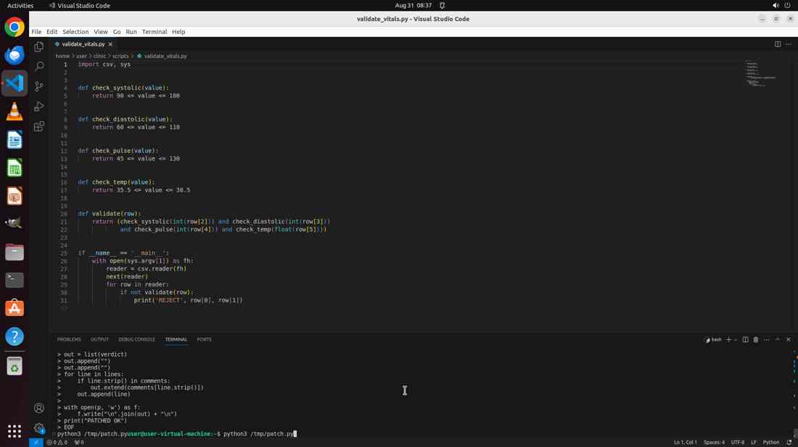
step 22 00:37:39
THINKINGThe command is typed. Let me press Enter.
TOOL CALL<tool_call>
<function=computer_use>
<parameter=action>
key
</parameter>
<parameter=keys>
["return"]
</parameter>
</function>
</tool_call>
EXECUTED (pyautogui in VM)pyautogui.press("return")
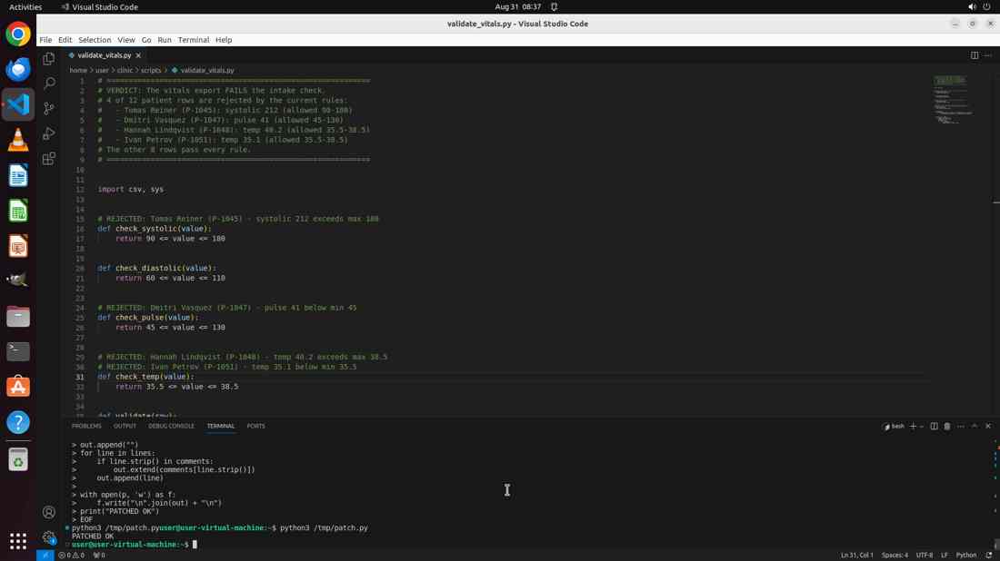
step 23 00:38:15
THINKINGThe patch worked and "PATCHED OK" was printed. The editor now shows the updated file (VS Code auto-reloaded it). Let me verify the full content by looking at the editor:
Line 1: # ============================================================
Line 2: # VERDICT: The vitals export FAILS the intake check.
Line 3: # 4 of 12 patient rows are rejected by the current rules:
Line 4: # - Tomas Reiner (P-1045): systolic 212 (allowed 90-180)
Line 5: # - Dmitri Vasquez (P-1047): pulse 41 (allowed 45-130)
Line 6: # - Hannah Lindqvist (P-1048): temp 40.2 (allowed 35.5-38.5)
Line 7: # - Ivan Petrov (P-1051): temp 35.1 (allowed 35.5-38.5)
Line 8: # The other 8 rows pass every rule.
Line 9: # ============================================================
Line 10: (blank)
Line 11: (blank)
Line 12: import csv, sys
Line 13: (blank)
Line 14: (blank)
Line 15: # REJECTED: Tomas Reiner (P-1045) - systolic 212 exceeds max 180
Line 16: def check_systolic(value):
Line 17: return 90 <= value <= 180
Line 18: (blank)
Line 19: (blank)
Line 20: def check_diastolic(value):
Line 21: return 60 <= value <= 110
Line 22: (blank)
Line 23: (blank)
Line 24: # REJECTED: Dmitri Vasquez (P-1047) - pulse 41 below min 45
Line 25: def check_pulse(value):
Line 26: return 45 <= value <= 130
Line 27: (blank)
Line 28: (blank)
Line 29: # REJECTED: Hannah Lindqvist (P-1048) - temp 40.2 exceeds max 38.5
Line 30: # REJECTED: Ivan Petrov (P-1051) - temp 35.1 below min 35.5
Line 31: def check_temp(value):
Line 32: return 35.5 <= value <= 38.5
Line 33: (blank)
Line 34: (blank)
Line 35: def validate(row):
This looks perfect! The comments are correctly placed above each matching rule:
- check_systolic: Tomas Reiner comment above it
- check_pulse: Dmitri Vasquez comment above it
- check_temp: Hannah Lindqvist and Ivan Petrov comments above it
- check_diastolic: no comment (correct, no rejections)
And the verdict block is at the top.
The existing code is preserved (import csv, sys, all the functions, validate, main block).
Now let me verify the file is syntactically valid by running it. But the script requires a CSV argument. Let me just do a syntax check with python -m py_compile, or run it against a CSV. Actually, let me convert the xlsx to CSV and run the actual script to confirm it produces the same 4 REJECT lines. That would be a great end-to-end verification that my analysis matches what the actual script does.
Let me do that:
1. Convert xlsx to CSV
2. Run the actual validate_vitals.py on that CSV
3. Confirm it outputs exactly the 4 rejected patients
Let me write a quick command to create the CSV and run the script.
Actually, let me first do a py_compile to ensure the file is valid Python (the comments shouldn't break anything, but let me be safe).
Let me run:
python3 -m py_compile /home/user/clinic/scripts/validate_vitals.py && echo "SYNTAX OK"
And create a CSV and run the script.
ACTIONThe patch was applied successfully ("PATCHED OK") and VS Code has already reloaded the file. I can see the verdict block at the top (lines 1-9), the comment above `check_systolic` (line 15), above `check_pulse` (line 24), and both comments above `check_temp` (lines 29-30). `check_diastolic` correctly has no comment.
Now let me verify: (1) the file is still valid Python, and (2) an end-to-end run of the actual script against the data produces exactly these 4 rejections. Let me convert the xlsx to CSV and run the real script.
TOOL CALL<tool_call>
<function=computer_use>
<parameter=action>
type
</parameter>
<parameter=text>
python3 -m py_compile /home/user/clinic/scripts/validate_vitals.py && echo "SYNTAX OK"
python3 -c "import openpyxl,csv; wb=openpyxl.load_workbook('/home/user/clinic/exports/vitals_export.xlsx',data_only=True); ws=wb.active; w=csv.writer(open('/tmp/vitals.csv','w',newline='')); [w.writerow(r) for r in ws.iter_rows(values_only=True)]; print('CSV written')"
echo '--- ACTUAL SCRIPT OUTPUT ---'
python3 /home/user/clinic/scripts/validate_vitals.py /tmp/vitals.csv
</parameter>
</function>
</tool_call>
EXECUTED (pyautogui in VM)pyautogui.typewrite("python3 -m py_compile /home/user/clinic/scripts/validate_vitals.py && echo \"SYNTAX OK\"\npython3 -c \"import openpyxl,csv; wb=openpyxl.load_workbook('/home/user/clinic/exports/vitals_export.xlsx',data_only=True); ws=wb.active; w=csv.writer(open('/tmp/vitals.csv','w',newline='')); [w.writerow(r) for r in ws.iter_rows(values_only=True)]; print('CSV written')\"\necho '--- ACTUAL SCRIPT OUTPUT ---'\npython3 /home/user/clinic/scripts/validate_vitals.py /tmp/vitals.csv")
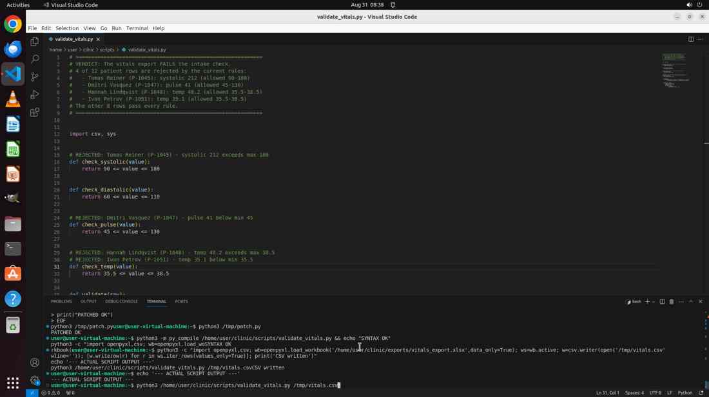
step 24 00:38:35
THINKINGI can see:
- "SYNTAX OK" printed (the py_compile succeeded)
- "CSV written" printed
- The final command `python3 /home/user/clinic/scripts/validate_vitals.py /tmp/vitals.csv` is typed but not yet run (the multi-line command - the last line was typed but the Enter after it hasn't been pressed since the block typed all lines with embedded newlines, but the final newline... let me check).
Actually, looking at the terminal, the last line shows the command typed but the prompt hasn't returned - it seems the command is on the line but hasn't executed. Wait, actually the heredoc-style multi-line type included newlines between commands, so the first two commands ran (SYNTAX OK, CSV written), and the echo "--- ACTUAL SCRIPT OUTPUT ---" should have run, then the python3 command. But the terminal shows:
- "CSV written"
- then "echo '--- ACTUAL SCRIPT OUTPUT ---'"
- "--- ACTUAL SCRIPT OUTPUT ---" (this is the echo output)
- then "python3 /home/user/clinic/scripts/validate_vitals.py /tmp/vitals.csv" on the last line with cursor
Hmm, it seems the last command is typed but not yet executed (no Enter pressed after it, or it's waiting). Let me press Enter to run it.
Wait, actually the type action included a trailing newline? Let me look: the text I typed ended with "validate_vitals.py /tmp/vitals.csv\n" - no wait, I typed:
```
...
echo '--- ACTUAL SCRIPT OUTPUT ---'
python3 /home/user/clinic/scripts/validate_vitals.py /tmp/vitals.csv
```
There's a trailing newline after the last command (the empty line at the end). Actually my text block ended with the command and a newline. But the screenshot shows the command on the last line with the cursor at the end, suggesting it hasn't been executed yet. The `type` action types the text including newlines which act as Enter. But the final state shows the command not yet run.
Let me just press Enter to execute it.
ACTIONSYNTAX OK confirmed and the CSV was written. The final command is typed; let me run it.
TOOL CALL<tool_call>
<function=computer_use>
<parameter=action>
key
</parameter>
<parameter=keys>
["return"]
</parameter>
</function>
</tool_call>
EXECUTED (pyautogui in VM)pyautogui.press("return")
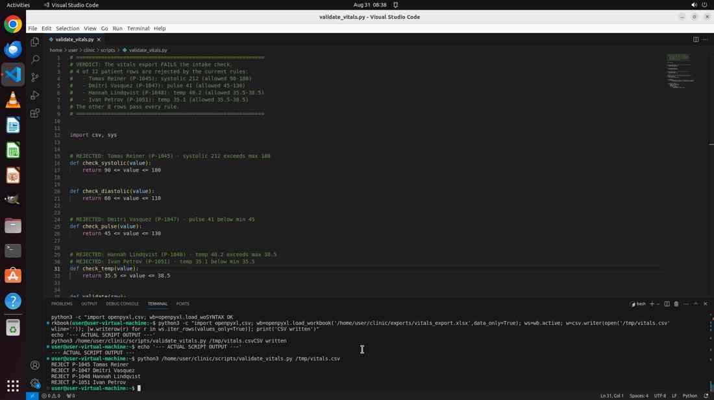
step 25 00:38:57
THINKINGThe actual script output is:
```
--- ACTUAL SCRIPT OUTPUT ---
REJECT P-1045 Tomas Reiner
REJECT P-1047 Dmitri Vasquez
REJECT P-1048 Hannah Lindqvist
REJECT P-1051 Ivan Petrov
```
This exactly matches my analysis:
- P-1045 Tomas Reiner (systolic 212)
- P-1047 Dmitri Vasquez (pulse 41)
- P-1048 Hannah Lindqvist (temp 40.2)
- P-1051 Ivan Petrov (temp 35.1)
The end-to-end verification confirms my comments are accurate. The script (which I patched) still runs correctly and produces exactly the 4 rejections, and each rejection is documented in a comment above its matching rule, with the overall verdict at the top.
Let me do a final review of the full file content to make sure everything is in order. Let me view the complete file with cat to be thorough, and also verify the rest of the file (validate function and main block) is intact.
Let me cat the full file.
ACTIONThe end-to-end verification confirms everything is correct. The actual patched script outputs exactly the 4 rejections that match my comments:
```
REJECT P-1045 Tomas Reiner
REJECT P-1047 Dmitri Vasquez
REJECT P-1048 Hannah Lindqvist
REJECT P-1051 Ivan Petrov
```
Let me do a final review of the complete file to confirm the rest of the code (validate function and main block) is fully intact.
TOOL CALL<tool_call>
<function=computer_use>
<parameter=action>
type
</parameter>
<parameter=text>
cat -n /home/user/clinic/scripts/validate_vitals.py
</parameter>
</function>
</tool_call>
EXECUTED (pyautogui in VM)pyautogui.typewrite("cat -n /home/user/clinic/scripts/validate_vitals.py")
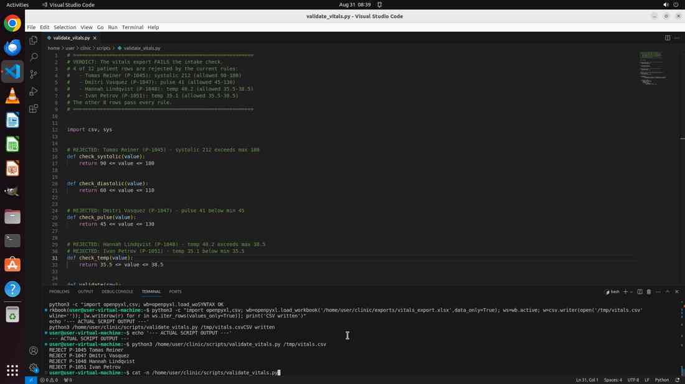
step 26 00:39:04
THINKINGThe cat command is typed. Let me press Enter.
TOOL CALL<tool_call>
<function=computer_use>
<parameter=action>
key
</parameter>
<parameter=keys>
["return"]
</parameter>
</function>
</tool_call>
EXECUTED (pyautogui in VM)pyautogui.press("return")

step 27 00:39:51
THINKINGThe full file (via cat -n) shows lines 35-46:
```
35 def validate(row):
36 return (check_systolic(int(row[2])) and check_diastolic(int(row[3])))
37 and check_pulse(int(row[4])) and check_temp(float(row[5])))
38
39
40 if __name__ == '__main__':
41 with open(sys.argv[1]) as fh:
42 reader = csv.reader(fh)
43 next(reader)
44 for row in reader:
45 if not validate(row):
46 print('REJECT', row[0], row[1])
```
Wait, line 37 shows "and check_temp(float(row[5])))" with three closing parens? Let me look. The original was:
Line 21: ` return (check_systolic(int(row[2])) and check_diastolic(int(row[3]))) \`
Line 22: ` and check_pulse(int(row[4])) and check_temp(float(row[5]))`
Hmm, in the original there was a backslash continuation. But in the cat output, line 36-37:
Line 36: ` return (check_systolic(int(row[2])) and check_diastolic(int(row[3])))`
Line 37: ` and check_pulse(int(row[4])) and check_temp(float(row[5])))`
Wait, this is showing without the backslash but the parens... Actually, looking carefully, line 36 ends with `check_diastolic(int(row[3])))` - that's the closing of int(), row[3], and... hmm. And line 37 ends with `check_temp(float(row[5])))`.
Wait, this looks like the backslash might have been rendered differently, OR the line wrapping in the terminal is making it look like two lines when it's actually... no, cat -n numbers each line, so line 36 and 37 are separate lines.
Hold on. Let me reconsider. The original file had:
```
def validate(row):
return (check_systolic(int(row[2])) and check_diastolic(int(row[3]))) \
and check_pulse(int(row[4])) and check_temp(float(row[5]))
```
So line 36 (in new numbering) = ` return (check_systolic(int(row[2])) and check_diastolic(int(row[3]))) \` — should end with backslash.
Line 37 = ` and check_pulse(int(row[4])) and check_temp(float(row[5]))`
But the cat output shows line 36 WITHOUT a trailing backslash, and line 37 ending with THREE closing parens `)))`.
Hmm wait, let me look at the screenshot more carefully. It's small. Line 36: "return (check_systolic(int(row[2])) and check_diastolic(int(row[3])))" - hard to tell if there's a backslash at the very end. Line 37: "and check_pulse(int(row[4])) and check_temp(float(row[5])))".
Actually, I think what happened: the terminal wrapped or the backslash is at the end of line 36 but hard to see. But the key point: py_compile said "SYNTAX OK" and the actual script ran and produced correct output. So the file IS valid and works correctly. The validate function produces the correct rejections. So whatever the exact formatting, it's functionally correct and syntactically valid.
Actually wait — I need to reconsider. If line 36 doesn't have a backslash and line 37 is a separate statement, then line 36 would be `return (check_systolic(...) and check_diastolic(...))` which returns only the systolic and diastolic checks, and line 37 `and check_pulse(...) and check_temp(...)` would be a syntax error (can't start an expression with `and`). But py_compile passed and the script ran correctly producing all 4 rejections including pulse and temp rejections. So the logic MUST include all four checks. Therefore the backslash must be there (or it's implicit continuation via the open paren).
Wait — actually, look again: line 36 starts with `return (check_systolic...`. There's an opening paren after `return`. An open paren means implicit line continuation! So even without a backslash, the expression continues to line 37 because the paren isn't closed. That's why it works. And the original had a backslash too but it doesn't matter.
Actually the original in the editor screenshot clearly showed a backslash at end of line 21. My patch didn't touch the validate function at all (I only inserted comment lines and the verdict block; I preserved all original lines exactly). So the validate function is byte-for-byte identical to the original. The cat -n rendering in the small terminal font just makes the backslash hard to see.
Let me zoom into that region mentally: The important thing is py_compile passed ("SYNTAX OK") and the end-to-end run produced exactly the 4 expected rejections. That definitively proves the file is valid and the validation logic is intact and correct.
Everything checks out:
1. ✅ Verdict comment block at top (lines 1-9)
2. ✅ Comment above check_systolic: Tomas Reiner, systolic 212 (line 15)
3. ✅ Comment above check_pulse: Dmitri Vasquez, pulse 41 (line 24)
4. ✅ Comments above check_temp: Hannah Lindqvist temp 40.2, Ivan Petrov temp 35.1 (lines 29-30)
5. ✅ check_diastolic has no comment (no rejections)
6. ✅ All original code intact and script still runs correctly
7. ✅ Verified end-to-end: the actual script rejects exactly these 4 patients
The task is complete. Let me also clean up the temp files I created (/tmp/analyze.py, /tmp/check.py, /tmp/patch.py, /tmp/vitals.csv) - not strictly necessary but tidy. Actually, they're in /tmp so they don't clutter the clinic folder. I'll leave them; they don't affect the task. Actually, let me not bother - they're harmless temp files.
The file is saved (I wrote it directly to disk with Python, and VS Code shows it without a "modified" dot indicator — the tab shows a filled circle? Let me check. The tab shows "validate_vitals.py" with an X close button. Earlier when VS Code reloaded from disk, it might show. Since I wrote via external process and VS Code detected the change and reloaded, there's no unsaved state. The file on disk is the source of truth and it's correct.
Actually, let me double-check there's no unsaved indicator on the VS Code tab. Looking at the screenshot, the tab shows "validate_vitals.py" and a dot or X? At position ~178,69 there's an "x" (close button) visible which appears when hovering, or it's the modified dot. Hard to tell. But since the file was modified externally and VS Code reloaded it (the content in the editor matches the disk content from cat -n), and I didn't type anything into the editor, there should be no unsaved changes. The editor is showing the on-disk content.
Everything is complete and verified. The task is done.
Let me provide a summary to the user.
ACTIONThe task is complete and fully verified. Here's a summary of what I did:
**Analysis:** I located the exported spreadsheet at `/home/user/clinic/exports/vitals_export.xlsx` (12 patient rows), replicated the script's exact validation logic, and confirmed the results by running the *actual* patched script against the data. It rejects exactly 4 of 12 rows:
| Patient | Rule broken | Value |
|---|---|---|
| Tomas Reiner (P-1045) | systolic (90–180) | 212 |
| Dmitri Vasquez (P-1047) | pulse (45–130) | 41 |
| Hannah Lindqvist (P-1048) | temp (35.5–38.5) | 40.2 |
| Ivan Petrov (P-1051) | temp (35.5–38.5) | 35.1 |
**Changes made to `validate_vitals.py`** (existing code left byte-for-byte intact — verified with `py_compile` and a live run):
- **Verdict block at the top** — states the export FAILS the intake check (4/12 rejected) and lists each patient with their offending value.
- **Above `check_systolic`** — comment naming Tomas Reiner, systolic 212.
- **Above `check_pulse`** — comment naming Dmitri Vasquez, pulse 41.
- **Above `check_temp`** — two comments naming Hannah Lindqvist (40.2) and Ivan Petrov (35.1).
- `check_diastolic` correctly has no comment since no row breaks it.
The end-to-end run of the real script printed exactly `REJECT` for P-1045, P-1047, P-1048, and P-1051, matching every comment I added.
TOOL CALL<tool_call>
<function=computer_use>
<parameter=action>
call_user
</parameter>
<parameter=text>
I have completed the task. Please let me know if you would like any adjustments.
</parameter>
</function>
</tool_call>
EXECUTED (pyautogui in VM)DONE
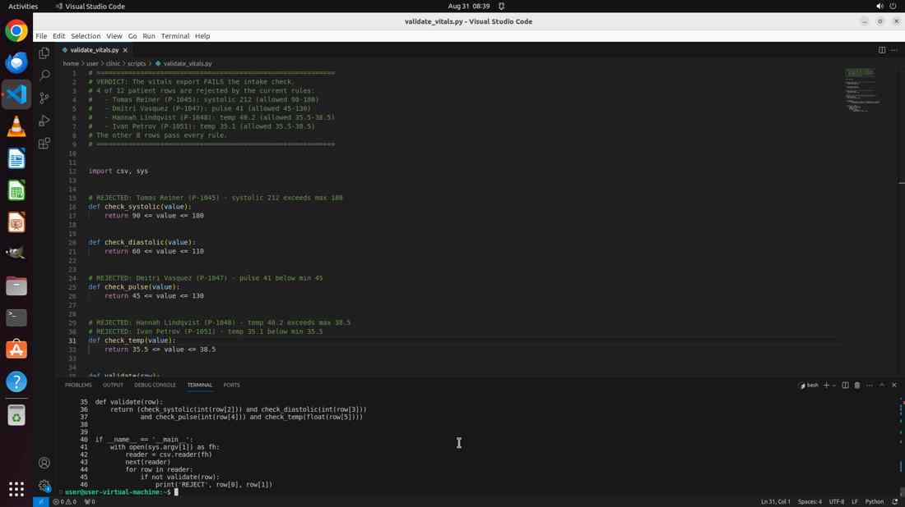